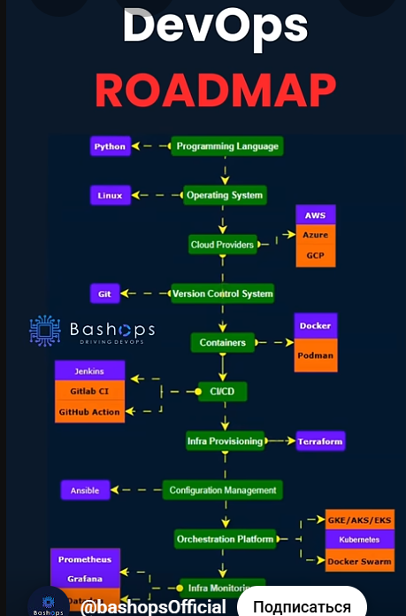

Software Development Life Cycle (SDLC)
&
Software Test Life Cycle (STLC)
Idea
Product Owner (PO) - Владелец продукта озвучивает идею
QC проверяет:
- Сможем ли мы это протестировать?
- Зачем это нужно?
- Существует ли более простая альтернатива?
STLC: Учим английский
Analysis
Business Analyst (BA) or System Analyst (SA) - Бизнес аналитик формирует бизнес требования:
- Software Requirements Specification (SRS)
- Software Requirements Document (SRD)
- Business Requirements Document (BRD)
- User story
QC: Все ли варианты развития событий учтены?
STLC: Этап планирования
- Определить список действий (активностей), которые нужно сделать, чтобы проверить максимально все возможные варианты работы продукта исходя из имеющихся времени и средств.
- Каждое действие имеет свою цель, задачи, методы, ограничения.
- Для каждого действия указывается время выполнения в общем графике тестирования.
Architecture & Design
Activity:
- Архитектор составляет технические требования на основании бизнес требований.
- Дизайнер создаёт дизайн.
- Верстальщик верстает прототип: Layout.
- SEO специалист разрабатывает план.
- DevOps обеспечивает среду для разработки, тестирование и релиза.
Design
Design flow
Исследования (сбор данных)
- Предварительный сбор данных - Поиск и анализ релевантных статей и информации.
- Конкурентный анализ (анализ рынка).
- Сбор данных по аналогичным и релевантным решениям - дешевый и эффективный метод, использовать всегда.
- Визуальный анализ: референсы и мудборды, выявление визуальных закономерностей.
- Анализ ассоциаций и эмоций: ожидание пользователей, создание нового эмоционального опыта, формирование мотивации.
Пользовательский проект.
Помогает сегментировать пользователей и начать их "чувствовать". Например, мобильное приложения вакансий.
| Старт | пользователь открыл приложение |
| Обучение (онбординг) | пользователь проходит минимальное обучение пользования приложением |
| Регистрация | пользователь проходит быструю регистрацию (ввод почты, телефона, ФИО) |
| Заполнение профиля | пользователь заполняет минимально необходимую информацию в профиле |
| Проект | пользователь создаёт задачу проекта для поиска кандидатов |
| Публикация | пользователь публикует проект (подтверждает публикацию) |
| Просмотр откликов | пользователь просматривает отклики на проект |
| Утверждение кандидатов | пользователь утверждает кандидатов для проекта |
| Закрытие проекта | пользователь закрывает проект |
| Финиш | пользователь закрывает приложение |
| Job (User) story | Понимание потребности наших пользователей |
| Customer (User) Journey Map | Расширенная версия пользовательского сценария |
| Структура интерфейса (Wireframe) и прототип | Предварительный черновик логики интерфейса |
| Jobs To Be Done | Концентрируемся на функции/услуге нашего интерфейса |
| Тема проекта | Креативная команда | ||||
|---|---|---|---|---|---|
| Группа | Бизнесмены | Творцы | Фрилансеры | Рекрутеры | Студенты |
| Имя | Александр, бизнесмен | Анна, креативный директор, визуальный художник | Маргарита, фотограф | Елена, HR | Катя, студент графический дизайн |
| Возраст | 39 | 34 | 27 | 42 | 23 |
| Платежеспособность | Высокая | Высокая | Средняя | Высокая | Низкая |
| Мотивация | Найти креативную команду для реализации рекламного проекта, чтобы ярко заявить о новом продукте на рынке и повысить узнаваемость бренда | Реализовать свой творческий замысел с помощью новых, нестандартных, технологичных подходов в современном искусстве | Найти интересный творческий проект, чтобы реализовать свои творческие идеи в команде таких же талантливых и креативных профессионалов | Найти сотрудников для формирования в компании креативной команды, которая на постоянной основе будет реализовывать сложные творческие проекты | Попасть на стажировку в крутую команду известных дизайнеров, чтобы прокачать свои навыки и на практике применить знания |
| Ожидания | Ценит время и готов платить за хороший результат, открыт новым идеям и необычным подходам для реализации поставленной задачи. Ожидает, что быстро найдёт команду талантливых профессионалов для создания креативного проекта, который будет реализован на высоком уровне и поможет с новой стороны раскрыть потенциал бизнеса и продукта | Ожидает найти неординарных творческих личностей, которые смогут выйти за рамки общих представлений о современном искусстве и технологиях и помогут создать проект, который произведёт фурор в арт-обществе | Ожидает, что сможет воплотить свои таланты в инновационных и вдохновляющих проектах, обретет признание в кругу единомышленников и сможет дать волю своему творческому потенциалу. Работать с командами, которые ценят творчество и готовы поддержать | Ожидает быстро найти и нанять на одной площадке высококлассных, креативных профессионалов, которые помогут вывести творческие проекты компании на новый уровень. Ожидает наличие крупной базы данных талантливых специалистов в разных областях, чтобы иметь возможность выбрать лучших кандидатов для своей компании, ожидает возможности быстрого поиска, просмотра профилей кандидатов, контактирование с ними и управление процессом найма в одном месте | Ожидает быстро найти стажировку, чтобы найти первый опыт работы по своей специальности, поработать с профессионалами данной области и перенять их опыт, после прохождения стажировки стать частью команды или наработать сильное портфолио для дальнейшего трудоустройства в хорошую компанию |
Интервью с пользователями.
- Перед запуском продукта
- Сбор мнений после запуска
- Дорогой метод
- Нужно 'чувствовать' людей
Проверяем результаты - сбор аналитики
Создание проекта и дизайна
UI design
Это визуальное оформление «изделия» - какие использовать цвета, удобно ли будет человеку попадать пальцем в кнопки, читабельным ли будет текст.
- Сравнить дизайн с эталонным вариантов
- Рекомендации: ios, android
- Реальные UI элементы ОС
- Проверка разработанного UI с дизайном продукта
UX design
Опыт пользователя, опыт взаимодействия (User eXperience, UX) — это восприятие и ответные действия пользователя, возникающие в результате использования и/или предстоящего использования продукции, системы или услуги.
Принципы обеспечения UX
Видимость статуса системы:
- Пользователь должен всегда знать, что происходит, получая подходящую обратную связь в приемлемое время.
- Соответствие между системой и реальным миром.
- Система должна «говорить на языке пользователя», используя понятную ему терминологию и концепции, а не «системно-ориентированный» язык.
Управляемость и свобода для пользователя:
- Пользователь часто выбирает системные функции по ошибке и должен иметь ясно видимый «аварийный выход» из нежелаемого состояния системы, не требующий сложных диалогов.
- Следует поддерживать функции отмены (undo) и повтора (redo).
Согласованность и стандарты:
- Пользователи не должны гадать, значат ли одно и то же разные слова, ситуации или операции.
- Также нужно следовать соглашениям, принятым для данной платформы.
Предотвращение ошибок:
- Продуманный дизайн, который не позволяет какой-то проблеме даже возникнуть, лучше, чем самые хорошие сообщения об ошибках.
- Следует устранять сами условия возникновения ошибок, либо выявлять их и предупреждать пользователя о предстоящей проблеме.
Распознавать лучше, чем вспоминать:
- Минимизируйте нагрузку на память пользователя, явно показывая ему объекты, действия и варианты выбора.
- Пользователь не должен в одной части диалога запоминать информацию, которая потребуется ему в другой.
- Инструкции по использованию системы должны быть видимы или легко получаемы везде, где возможно.
Эстетический и минималистический дизайн:
- В интерфейсе не должно быть информации, которая не нужна пользователю или которая может понадобиться ему в редких случаях.
- Каждый избыточный элемент диалога отнимает внимание от нужных элементов.
Помочь пользователю понять и исправить ошибку:
- Сообщения об ошибках следует писать простым языком, без кодов, чётко формулируя проблему и предлагая конструктивное решение.
- Справка и документация
Рекомендации
- В сайтах сравниваем контент, в мобильных приложениях - функции.
- Эмпатия - способность собрать информацию о мыслях и чувствах пользователя.
- Т.е. поставить себя на место пользователя, понять его потребности, страхи и боли.
- На основе этих знаний спрогнозировать его действия.
- Физиология - область фокусировки зрения, параметры рук/ладоней/пальцев.
- Психология - эмоции, мотивации.
- Нейробиология - обработка информации, запоминание.
- Физические ограничения среды - параметры устройства, хранение данных.
- Удалить беспорядок.
- Сделать навигацию самоочевидной.
- Создать бесшовный опыт.
- Использовать правильные размеры целей нажатия (тэп таргеты).
- Текст должен быть разборчивым.
- Элементы интерфейса должны быть ясно видны.
- Разработать управление, основанное на расположении руки.
- Снизить необходимость в наборе текста.
Так же, как с любыми другими элементами дизайна, советы, указанные выше – это только место для старта.
Смешивайте и сочетайте эти идеи с вашим собственным для достижения наилучших результатов.
Просто помните, что дизайн — не только для дизайнеров — он для пользователей.
Посадочная страница
- образцы подобных продуктов
- прототип
- быстрая загрузка: никаких CDN и тяжёлых ресурсов (картинки, видео, аудио)
- отличная индексация поисковыми роботами: семантика, доступность, микроразметка, чистый код, никаких библиотек и SPA
- побуждение пользователя к действию: заинтересовать, объяснить выгоду, предоставить гарантии, побудить к действию, доп. информация
Figma
- слои
- группы
- фреймы
- сэкшены
- констрейнсы
- автолейауты
- компоненты
- варианты
- пропертис
- анимация
Проектирование (UX)
- User story
- ULM - карта путей пользователя
- Прототипирование - черновой вариант интерфейсов. Визуализируем и тестируем как будет работать продукт.
- Usability-testing - тестируем на реальных пользователях
Дизайн-система (UI)
Визуальное решение - референсы - скриншоты понравившихся дизайнов. Копируем цвета, шрифты и т.д.
Токены - переменные с основными параметрами для всех элементов интерфейса:
Цвет:
- Подбор цветов и генерация цветовых схем.
- Figma plagin - color compass - распарсить оттенки.
- Создать стили заливки по оттенкам (Fill выбрать заливку, +, Blue/300 = Цвет/Оттенок).
шрифт:
- Из прототипа скопировать Заголовки, подзаголовки, основной текст, текст кнопок, ссылок и инпутов.
- Сгруппировать текста по шрифту, размеру и толщине.
- Подписать каждую группу.
- Создать стили текста: выбрать стиль текста + название стиля.
отступ, тень, форма, и т.д.
UI-kit - создание компонентов для многократного использования
Копируем составные блоки, которые повторяются (header, footer и т.д.)
Из составных блоков копируем отдельные простые блоки (кнопки, поля ввода, изображение, ссылка и т.д.)
Итоговый дизайн.
Fonts & symbols
Photos
Collections
Designers platforms
- Creatoom - Журнал о дизайне, где публикуются мокапы от ведущих дизайнеров.
- Pinterest - Социальная сеть, где можно найти вдохновение и идеи для дизайна.
- Awwwards - Сайт, где представлены лучшие веб-сайты со всего мира.
- Behance - Платформа для публикации своих работ и поиска работы.
- Dribbble - Сообщество дизайнеров, где можно делиться своими работами, получать отзывы и найти клиентов.
Study design
SEO
Рекомендации
- Ключевые слова в site title, tagline, page/post titles, excerpts, headings and content.
- Постоянное обновление контента.
- Google E-A-T (оценка качества контента): expertise, authority (ссылки с других сайтов и комментарии в соц.сетях), trustworthiness.
- Контент должен быть распространяемым: забавный, короткий, статусный, соответствующий язык.
- Внутренние ссылки должны образовывать воронку и сходиться на продвигаемой странице (продвигать ту, что больше зарабатывает).
- Мета данных и теги видны поисковому боту: плаги и настройки сайта.
- Поисковый бот смотрит на скорость сайта (GTmetrix, PageSpeed insights): скорость и кеширование хоста, скорость загрузки темы.
- Оптимизировать js, css, изображения и видео: формат файла (jpg, png, webp), расширение до 1920:1080, alt-текст с ключевиком, название, описание.
- Создать sitemap.
- Локализация: язык, локальные ключевые слова, контактные данные, локальные контент, ссылки с локальных ресурсов.
- Использовать заголовки, семантику и микроразметку.
- Продвижением рулит контент - контент писать h2h (human to human).
- Ремаркетинг обязательно.
- Добавить гугл анализ в домен сайта (DNS запись) в формате txt.
- Проверить сайт в поисковой выдаче - в поисковой строке ввести site: your_site_domain.
- Проверять свою позицию в выдаче по ключевым запросам лучше через платный сервис: serpstat.
- Проверять свою позицию в поисковой выдаче раз в неделю.
- Отслеживать мобильную и десктопную выдачу.
- Отслеживать по коротким (самым частотным) ключевым фразам.
- Повторить те же ключевые фразы, но с добавлением географии.
- Если ключевая фраза заходит в топ-20, то это приносит трафик.
- Если ключевая фраза заходит в топ-10, то это приносит деньги.
- Лови домены, которые скоро освободятся и на которых идут ссылки.
- Купив такой домен, редиректом эти ссылки перенаправить на свой домен.
Ключевые моменты
Зачем этот сайт?
- Аудитория (психотип)
- Контент (семантическое ядро)
- Функционал (продукт)
Продукт:
- Сервис
- Отзывы
- Ассортимент
- Рыночная цена
- Качество услуги
Составить:
- Бюджет: SEO и реклама дополняют друг друга. SEO & AD & Google Shopping (Merchant).
- SEO - это не быстро в топ, это надолго в топе. Быстро - это контекстная реклама.
- Контент-план - собрать всё до кучи с привязкой по деньгам и срокам.
Поисковые запросы:
- Коммерческие (товар цена, товар купить, товар стоимость)
- Информационные (как пользоваться товаром, товар для, товар отзывы)
- Общие запросы (товар, товар это)
- Навигационные (товар брэнда, производитель)
Кластеры запросов - группировка запросов по страницам:
- Кластеризация по топу (беру топ 10 запросов, остальные сортирую по первым десяти)
- Анализ конкурентов (парсим сайты конкурентов и смотрим их запросы)
- Для контекстной рекламы интересны короткие ключевые запросы, т.к. поисковик будет учитывать все варианты где есть слова из нашего запроса.
- Для SEO интересны длинные ключевые запросы, т.к. варианты запросов пользователя будут учитываться как комбинация только тех слов которые есть в ключевом запросе.
- Сортируем ключевые запросы в экселе по частотности.
- По самым частотным ключевым запросам создаём отдельные страницы.
- Остальные ключевые запросы (с меньшей частотностью) распределяем по существующим страницам.
- На одной страницы должны быть слова одинакового смысла.
- При кластеризации нужно найти ключевые запросы, которыми чаще всего люди ищут мой продукт и распределить эти запросы по страницам моего сайта также как гугл объединяет эти запросы в своих кластерах (коммерческий, информационный и т.д.).
- В теме, которую знаешь хорошо делаем кластеризацию вручную, опираясь на свой опыт.
- В теме, которую знаешь плохо используй автоматическую кластеризацию на сторонних сервисах, т.к. они анализируют то, что уже есть (конкурентов).
Title & h1:
- Title - показывает основную, самую сильную релевантность для поисковой системы.
- На каждой странице должен быть h1 и title отдельно для каждой страницы и только по одному.
- Для поисковой системы важно чтобы title был уникальным на весь интернет и полностью соответствовал поисковому запросу.
- h1 может быть уникальным в рамках сайта и может не полностью соответствовать поисковому запросу.
- h1 и title обязаны иметь один смысл.
- В h1 и title важно выстраивать слова в порядке важности - сначала самые важные.
Структура сайта
Robots.txt
- Поисковый робот сначала заходит на домен сайта и ищет есть ли файл robots.txt.
- Файл robots.txt - это инструкция для поискового робота что индексировать в поисковой системе.
- Через файл robots.txt запрещаем индексацию общего уровня (каталоги и т.д.) и динамически создаваемых страниц.
- Тегом мета запрещаем индексирование статической страницы.
meta name="robots" content="nofollow, noindex".htaccess - файл для описания работы ссылок на сайте.
- Snipet - то что выдает поиск, состоит из title (h1), url, описание из тега description и микроразметки.
- Description и favicon влияет на CTR - соотношение показов и кликов.
- Главная задача подтолкнуть пользователя нажать на ссылку.
- Желательно в описании указать ключевые слова, шрифтовые символы и цифры.
sitemap.xml - список страниц для поискового робота, которые нужно проиндексировать.
- sitemap.xml указывает на более высокий приоритет индексации.
- Добавить url sitemap.xml в вебмастер.
- Отправить на индексацию главную страницу, посадочные страницы и те страницы которые нужно продвигать.
- Отключить индексацию картинок.
- Под каждый проект отдельный аккаунт в Google Analytics, название аккаунта и ресурса - это не сам сайт, а названия проекта.
- Идентификатор анализатора добавить на сайт вручную или через Google Tag Manager.
- Код идентификатора всегда на всех страницах.
- Добавлять на сайт гугл инструменты через Google Tag Manager.
Интернет-магазин
- Карточки товаров
- Коммерческие страницы (доставка, цена, гарантия, возврат денег)
- Фильтры и теги (фильтрация доступная для индексации и теговые страницы)
- Категории
Сайт услуг
- Каждая услуга на отдельной странице
- Коммерческие страницы (доставка, цена, гарантия, возврат денег)
- В хлебных крошках на последней крошке с названием страницы ссылки быть не должно.
- На странице не должно быть ссылки на саму себя.
- Для продвигаемых страниц уровень вложенности по url не больше трёх.
- В интернет магазине продвигаются страницы категории и товара.
- На главной странице желательно ничего не продвигать.
- Это точка входа трафика на сайт, дальше трафик распределяется по категориям, каждая из которых продвигается.
- Под каждую услугу должна быть отдельная страница.
- Продвигать каждую услугу (для товаров категория) отдельно на отдельной странице.
- Продвигать одновременно максимум две страницы, лучше по одной.
url:
- front-page/categoria1
- front-page/categoria2
- front-page/categoria3
- front-page/products/все товары сюда
- привязываем товары к категориям в настройках товара
- Поисковая система индексирует и запоминает страницы по их url.
- Чтобы поменять url без потери продвижения в выдаче применяем редирект.
Посадочные страницы
- Описание
- Фото (видео)
- Стоимость
- Отзывы
- Удобство
Отсортировать страницы для продвижения:
- Максимальная маржа в продукте (наценка).
- Максимальная частотность запроса (ёмкость рынка).
- Перемножить маржу на частотность и посчитать какая страница сколько принесёт (доходы).
- По ключевым запросам страниц просчитать закупку ссылок с учётом конкурентов (расходы).
- Продвигать страницы в очередности по максимальной прибыли (доходы - расходы).
- Если текст не впихивается на страницу, можно сделать раздел часто задаваемые вопросы и ответы на них.
- В формулировке вопросов и ответов впихнуть ключевики.
- Продают качественные картинки и видео.
- Информационные и коммерческие запросы на отдельных страницах.
- Текст статей может писать CahtGPT, проверять уникальность обязательно.
- Либо писать самому и давать в CahtGPT для стилистики и проверки слога.
- Если мало места для текста (мобильный вариант), то можно сделать бургер, в котором Н2 будет название пункта бургера и при нажатии на него раскроется короткий текст.
- Цифры цепляют взгляд пользователя.
- Менее частотные ключевые запросы, которые не вошли в тайтл и h1, запихиваем в h2 статей на страницах.
- h3 уже не индексируется.
PR (page rank) - вес страницы.
- Страницы сайта ссылаются друг на друга внутри сайта.
- Больше вес имеет та страница на которую больше ссылаются другие.
- Нужно отслеживать сколько ссылок на страницу приходит и сколько ссылок уходит с неё на другие страницы.
Чтоб убрать вес страницы:
- не делать отдельную страницу, а поместить инфу как раздел на другой странице
- не индексировать страницу
- сделать на этой странице ссылки на продвигаемые страницы (раздел 'популярное', 'также может понравиться', 'рекомендуем' и т.д.)
- потерявшие актуальность страницы не уделять, делаем с них ссылки на продвигаемые страницы
Основной принцип:
- сфокусировать и сконцентрировать весь сайт и все внешние ссылки на одной странице - странице где продвигается основной заработок.
- На неё всё приходит и ничего не уходит - воронка.
- Если в ссылку добавить nofollow, то вес по ней не перейдет.
Технические доработки:
- Микроразметка (html)
- Скорость работы (до 2с загрузка) PageSpeed Insights
- Доступность сайта (24/7)
Продвижение картинками в поиске:
- Обязательно заполняем title и alt в теге изображения.
- В title и alt вписывать ключевики.
- Все картинки подписаны по разному.
Повышение траста:
- репутация (отзывы, соц.сети)
- Youtube (видеообзоры и полезная инфа о товаре)
- Внешняя реклама (Гугл, Яндекс, Соц.сети)
- Внешние ссылки
- Накрутка ПФ (поведенческих факторов)
Информационка:
- Информационные статьи что для чего нужно, что с этим делать, как делать и т.д., нужны для привлечения трафика по низкочастотным запросам.
- Такой трафик денег не несёт, но даёт вес, который можно потом ссылками отдавать на продвигаемые доходные страницы.
- Задача задержать посетителя на сайте как можно дольше. Добавить калькулятор, сравнения по параметрам и т.д.
Закупка ссылок
| % | Домен | Страница | Ссылки |
|---|---|---|---|
| 1 | https://weltreise.com | https://weltreise.com | 49 |
| 2 | https://www.earthtrekkers.com | https://www.earthtrekkers.com/our-around-the-world-itinerary | 193 |
| 3 | https://www.earthtrekkers.com | https://www.earthtrekkers.com/how-to-travel-around-the-world | 28 |
| 4 | https://www.ab-in-den-urlaub.de | https://www.ab-in-den-urlaub.de | 31 |
| 5 | https://urlaub.check24.de | https://urlaub.check24.de/vergleich/2005-6-6-0/Reisen | 320 |
| Среднее значение | 125 | ||
| Стоимость ссылки | 200 грн | ||
| Сумма закупки ссылок | 25 000 грн | ||
- использовать сервис для проверки количества входящих ссылок (интересует количество ссылающихся доменов)
- все данные приблизительные - проверить по трем сервисам и несколько вариантов запроса
- наращивать ссылки постепенно, чтобы не забанили (15 ссылок в месяц, потом можно увеличивать)
- 125 / 15 = 8 месяцев, год - это нормально для получения результатов
- Закупка ссылок на collaborator
- Ссылки распределяются в пропорции 30% на главную страницу и 70% на все остальные страницы.
- Трафик с главной страницы распределяется на все остальные страницы.
- Текст статьи с нашей ссылкой проверять на уникальность.
- Проверить ссылку на открытие в этом же окне, без nofollow.
| Дата план | Цена план | Заказана | Цена | Одобрена | Ссылка | Анкор | Площадка(ссылка) | DR | Трафик | Тема |
|---|---|---|---|---|---|---|---|---|---|---|
| дата | цифра | дата | цифра | дата | ссылка | текст продвигаемой страницы | домен где размещена | цифра | цифра | текст |
- Сразу после индексации сайта в поисковой системе покупаем до 10 безанкорных ссылок на главную страницу по одной не чаще чем раз в три дня.
- Следующий шаг - закупка по одной ссылке раз в три дня по схеме: одна на главную страницу и две на остальные страницы.
- Через месяц можно ускориться до одной ссылки в день.
- После достижения топа, продолжаем покупать ссылки раз в неделю для поддержания потока.
- При хорошей динамике прироста реальных ссылок, можно перестать закупать.
| безанкорные | 50 % (можно брать дешёвые) |
| некоммерческие | 25 % (недорого) |
| коммерческие | 25 % (подороже) |
- Плохое брать нельзя - DR min 20.
- Отслеживаем какое продвижение по какому коммерческому запросу и докупаем ссылки по плохо продвинутому анкору.
- Отслеживать пропорции главная и остальные страницы 30/70, безанкорные/некоммерческие/коммерческие.
- В анкоры добавлять разные слова для разнообразия.
SEO ресурсы
Layout
Markdown
перенос строки: два пробела
Heading
# H1
## H2
### H3
#### H4
##### H5
###### H6
Bold
**bold text**
__bold text__
Italic
*italicized text*
Strike through
~~The world is flat.~~
Blockquote
> blockquote
Ordered List
1. First item
2. Second item
3. Third item
Unordered List
- First item
- Second item
- Third item
Code
code
Link
[title](https://www.example.com) либо [Текст ссылки](#id)
автоматически генерирует ID для заголовков:
# Моя новая секция -> #моя-новая-секция
[Моя новая секция](#моя-новая-секция)
Указать id для целевого элемента:
## Заголовок {#my-section}
Внутренняя ссылка на другой файл:
[Текст ссылки](путь/к/файлу.md)
В тексте:
[текст ссылки][id]
ниже в файле определить саму ссылку:
[id]: адрес_или_путь.
Image

Table
| Item | Price | # In stock |
|--------------|:-----:|-----------:|
| Juicy Apples | 1.99 | 739 |
| Bananas | 1.89 | 6 |
: - по какому краю выравнивание
Fenced Code Block
{
"firstName": "John",
"lastName": "Smith",
"age": 25
}
Footnote
Here's a sentence with a footnote. [^1]
[^1]: This is the footnote.
Heading ID
My Great Heading {#custom-id}
Definition List
term
: definition
Task List
- [x] Write the press release
- [ ] Update the website
- [ ] Contact the media
Emoji
That is so funny! :joy:
Highlight
I need to highlight these ==very important words==.
Subscript
H~2~O
Superscript
X^2^HTML
<div>
<p>Hello, world!</p>
</div>HTML позволяет делать валидацию с помощью атрибутов required, pattern и т.д.
| тэг | назначение | блочный | семантика |
|---|---|---|---|
| !DOCTYPE | тип документа | ||
| html | корень HTML-документа | ||
| head | содержит метаданные/информацию для документа | ||
| title | название сайта, которое отображается во вкладке | ||
| body | тело документа | блочный | |
| header | заголовок документа или раздела | блочный | семантика |
| nav | навигационные ссылки | блочный | семантика |
| main | основное содержимое документа | блочный | семантика |
| section | раздел в документе | блочный | семантика |
| aside | боковая панель сайта, второстепенный контент | блочный | семантика |
| div | контейнер | блочный | |
| footer | нижний колонтитул документа или раздела | блочный | семантика |
| тэг | назначение | блочный | семантика |
|---|---|---|---|
| article | группировка связанных элементов в независимый объект | блочный | семантика |
| hgroup | заголовок и связанный контент | блочный | |
| abbr | title="расшифровка" - аббревиатура или акроним | строчный | семантика |
| address | вывод контактной информации | строчный | семантика |
| b | жирный текст | строчный | |
| strong | текст большой важности | строчный | семантика |
| u | подчеркнутый текст | строчный | |
| small | меньший текст | строчный | |
| sub | подстрочный текст | строчный | |
| sup | надстрочный текст | строчный | |
| span | часть текста в строке | строчный | |
| bdi | изолирует часть текста | строчный | |
| bdo | dir="rtl" - переопределяет направление текста | строчный | |
| blockquote | cite="ссылка на источник" | блочный | семантика |
| cite | название произведения, автор цитаты | строчный | семантика |
| q | короткая цитата | строчный | семантика |
| time | вывод даты и времени | строчный | семантика |
| br | разрыв строки | строчный | |
| code | часть компьютерного кода | строчный | |
| data | value="номер продукта" - связывает номер с названием продукта | строчный | |
| del | перечеркнутый текст | строчный | |
| dfn | термин, который будет определен | строчный | |
| em | текст курсивом с ударением, отдельная мысль или перефразировка | строчный | семантика |
| i | текст курсивом, отдельная мысль или иностранное слово | строчный | |
| h1 - h6 | заголовок | блочный | семантика |
| ins | текст, который был вставлен | строчный | |
| kbd | текст, как ввод с клавиатуры | строчный | |
| mark | отмеченный/выделенный текст особого внимания | строчный | |
| s | неправильный текст | строчный | |
| samp | текст как вывод компьютерной программы | строчный | |
| var | текст как переменная | строчный | |
| wbr | возможный разрыв строки | строчный | |
| p | параграф | блочный | |
| pre | предварительно отформатированный текст | блочный | |
| ruby | аннотация Ruby (для восточноазиатской типографики) | блочный | |
| hr | тематическое изменение содержания (линия) | блочный |
| тэг | назначение | блочный |
|---|---|---|
| script | вставка JS | |
| style | вставка CSS | |
| embed | контейнер для внешнего приложения | блочный |
| object | контейнер для внешнего приложения | блочный |
| template | контейнер для скрытого при загрузке страницы контента | |
| iframe | встроенный фрейм (страница в странице) | |
| noscript | альтернативный контент при не поддержании JS |
| тэг | назначение | блочный |
|---|---|---|
| details | спойлер | блочный |
| summary | название спойлера | блочный |
| dl | список определений | блочный |
| dt | термин | блочный |
| dd | значение термина | блочный |
| ol | упорядоченный список | блочный |
| ul | неупорядоченный список | блочный |
| menu | неупорядоченный список | блочный |
| li | элемент списка | блочный |
| optgroup | label="" - группа связанных параметров в раскрывающемся списке | блочный |
| option | value="" - значение в раскрывающемся списке | блочный |
| label | for="cars" - имя раскрывающегося списка | блочный |
| select | name="cars_list" id="cars"- раскрывающийся список | блочный |
| option | value="" - значение в раскрывающемся списке | блочный |
| dialog | диалоговое окно | блочный |
| textarea | id="" name="" placeholder="" rows="" cols="" - многострочное поле | блочный |
| button | кнопка | блочный |
| тэг | назначение | блочный |
|---|---|---|
| link | связывает с документом другой документ | блочный |
| base | href="..." - базовый URL-адрес для всех относительных URL-адресов в документе | строчный |
| a | href="ссылка" - гиперссылка | строчный |
| a | href="#" target="_blank" title="подсказка" class="" id="" style="" | строчный |
| a | href="tel: phone" | строчный |
| a | href="email: address" | строчный |
<table>
<caption>Table name or description</caption>
<thead>
<tr>
<th>ISBN</th>
<th>Title</th>
<th>Price</th>
</tr>
</thead>
<colgroup>
<col span="2" style="background-color:red">
<col style="background-color:yellow">
</colgroup>
<tbody>
<tr>
<td colspan="2">3476896</td>
<td rowspan="2">My first HTML</td>
<td>$53</td>
</tr>
</tbody>
<tfoot>
<tr>
<td>Sum</td>
<td>$180</td>
</tr>
</tfoot>
</table>
| тэг | назначение | блочный |
|---|---|---|
| table | таблица | блочный |
| caption | название таблицы | блочный |
| thead | шапка таблицы | блочный |
| tbody | тело таблицы | блочный |
| tr | строка таблицы | блочный |
| th | ячейка шапки таблицы | блочный |
| td | ячейка тела таблицы | блочный |
| tfoot | подвал таблицы | блочный |
| colgroup | группа столбцов в таблице | блочный |
| col span="2" | объединение столбцов в таблице | атрибут |
| row span="2" | объединение строк в таблице | атрибут |
<form action="/action_page.php" method="POST">
<label for="input_id">Название инпута:</label>
<input type="text" id="input_id" name="input_name" value="" tabindex="" />
<input type="submit" id="" name="" value="Надпись на кнопке" />
</form>
| тэг | назначение | блочный | ||
|---|---|---|---|---|
| form action="" method="" | отправка введенных данных, на адрес атрибута action, методом атрибута method | блочный | ||
| fieldset | группирует элементы формы | блочный | ||
| legend | заголовок формы | блочный | ||
| label | for="fname" - заголовок поля | строчный | ||
| input | type="text" id="fname" name="fname" - поле ввода | строчный | ||
| input | type="submit" value="Submit" - кнопка отправить | строчный | ||
| СПИСОК ВАРИАНТОВ | ||||
| form action="" method="" | форма с предопределённым списком вариантов для поля ввода | блочный | ||
| label | for="browser" - заголовок поля | строчный | ||
| input | list="browsers" name="browser" id="browser" - поле ввода | строчный | ||
| datalist | id="browsers" - список вариантов | блочный | ||
| option | value="Edge" - вариант ввода | строчный | ||
| input | type="submit" - кнопка отправить | строчный | ||
| ПОИСК | ||||
| search | раздел поиска | блочный | ||
| form | форма поиска | блочный | ||
| input | name="" id="" placeholder="" - поле ввода поиска | строчный | ||
| ВЫЧИСЛЕНИЯ | ||||
| form | oninput="x.value=parseInt(a.value)+parseInt(b.value)" - результат расчета | блочный | ||
| input | type="range" id="a" value="50" - ввод первого слагаемого | строчный | ||
| - input | type="number" id="b" value="25" - ввод второго слагаемого | строчный | ||
| = output | name="x" for="a b" - вывод суммы | строчный | ||
| МАНОМЕТР | ||||
| label | for="idname" - Заголовок манометра | строчный | ||
| meter | id="idname" value="" - скалярное измерение в известном диапазоне (манометр) | блочный | ||
| ПРОГРЕСС | ||||
| label | for="file" - Заголовок прогресса | строчный | ||
| progress | id="file" value="32" max="100" - Представляет ход выполнения задачи | блочный | ||
| тэг | назначение | блочный | ||
|---|---|---|---|---|
| canvas | id="myCanvas" - рисование графики на лету | блочный | ||
| svg | width="" height="" - контейнер для графики SVG | блочный | ||
| img | src="" alt="" - изображение | строчный | ||
| КАРТА | ||||
| img | src="" alt="" usemap="#workmap" - карта-изображения | |||
| map | name="workmap" - карта-изображения | |||
| area | shape="" coords="" alt="" href="" - карта-изображения | |||
| КОНТЕЙНЕР ИЗОБРАЖЕНИЙ | ||||
| picture | контейнер для нескольких вариантов ресурсов изображений | блочный | ||
| source | media="(min-width: 650px)" srcset="img_food.jpg" - адаптив без css, ускоряет загрузку верстки | |||
| source | media="(min-width: 465px)" srcset="img_car.jpg" | |||
| img | src="img_girl.jpg" - Если браузер не поддерживает picture, то выведет img | строчный | ||
| ГРУППА МЕДИА | ||||
| figure | группировка медиа-элементов, блочный, изображение с доп.тегами | |||
| img | src="" - медиа-элемент | |||
| figcaption | заголовок медиа-элемента | |||
| audio | controls - встроенный аудио контент | |||
| source | src="horse.ogg" type="audio/ogg" - аудио контент | |||
| source | src="horse.mp3" type="audio/mpeg" - аудио контент | |||
| track | src="" kind="" srclang="" label="" - текстовые дорожки | |||
| video | width="" height="" controls - встроенный видео контент | блочный | ||
| source | src="" type="" - видео контент | |||
| track | src="" kind="" srclang="" label="" - текстовые дорожки | |||
| тэг | назначение |
|---|---|
| meta charset="UTF-8" | Кодировка |
| meta name="viewport" content="width=1170" | фиксированная ширина вся помещается в экран |
| meta name="viewport" content="width=device-width" | адаптивный |
| meta name="viewport" content="width=device-width,initial-scale=1.0,maximum-scale=1.0,user-scalable=0" | параметры адаптивности |
| meta name="format-detection" content="telephone=no" | отключает ссылку у номера телефона на iOS |
| meta name="description" content="описание до 140 символов" | для SEO |
| meta name="keywords" content="ключевые слова через запятую до 20" | ключевые слова для SEO |
| meta name="robots" content="noindex, nofollow" | не допуск поисковых роботов к странице |
| meta name="robots" content="none" | |
| meta name="robots" content="noimageindex, nofollow" | запрет индексации картинок и ссылок |
| meta name="Author" content="Дарт Вейдер" | Автор страницы |
| meta name="Copyright" content="Люк Скайвокер" | Авторские права |
| meta name="Address" content="Татуин, кратер № 97" | Адрес автора |
| meta http-equiv="refresh" content="0"; url="" | обновляет страницу либо перенаправляет пользователя, указать количество секунд до перенаправления и адрес страницы |
| meta property="og:locale" content="ru_RU" | локализация для русскоязычного сайта |
| meta property="og:type" content="article" | тип контента статья |
| meta property="og:title" content="META теги" | заголовок записи в социальной сети |
| meta property="og:description" content="описание страницы" | описание страницы |
| meta property="og:image" content="http://fls.guru/meta/img/bg.jpg" | изображение для записи в соцсети |
| meta property="og:url" content="http://fls.guru/meta/" | ссылка на текущую страницу |
| meta property="og:site_name" content="Название сайта" | Название сайта |
| meta name="twitter:card" content="" | тип карты твитер |
| meta name="twitter:site" content="Автор" | имя/логин автора |
| meta name="twitter:title" content="META теги" | название страницы |
| meta name="twitter:description" content="описание страницы" | описание страницы |
| meta name="twitter:image" content="http://fls.guru/meta/img/bg.jpg" | изображение для записи в соцсети |
CSS
Стилем или CSS (Cascading Style Sheets, каскадные таблицы стилей) - называется набор параметров форматирования, который применяется к элементам документа, чтобы изменить их внешний вид.
Достоинства:
- Разграничение кода и оформления.
- Разное оформление для разных устройств.
- Расширенные по сравнению с HTML способы оформления элементов.
- Ускорение загрузки сайта.
- Единое стилевое оформление множества документов.
// внутренние стили, приоритет максимальный
<h1 style="color: red;">
// глобальные стили
<style>
h1 {color: red;}
</style>
// сбросить css браузера
<link rel="stylesheet" href="https://cdnjs.cloudflare.com/ajax/libs/normalize/8.0.1/normalize.css" />
// связанные стили
<link rel="stylesheet" href="путь/к файлу/CSS" />
- Блок - часть кода, которая повторяется или может повторяться самостоятельно.
- Элемент - это часть блока: блок__элемент.
- Модификатор - дополняет или уточняет стиль блока или элемента: блок__элемент_модификатор.
- Микс - позволяет использовать блоки и элементы в одном объекте.
Шрифты подключаем любо в html тегом link либо в scss через @import
Селекторы
селектор {
свойство: значение;
}- Базовые: #id, .class, tag.
- Иерархические: +, >, ~.
- Атрибутные: [atribute].
- Псевдоклассы: :hover, :visited и т.д. - при действии.
- Псевдоэлементы: ::after, ::before - добавляем элемент до или после выбранного.
| селектор | назначение | |
|---|---|---|
| @import "имя файла"; | импорт файлов | |
| tag | имя тэга | |
| .class | CSS-класс | |
| #id | ID тэга | |
| name = value | атрибут тэга | |
| :filter | фильтр (псевдокласс) | |
| * | все элементы на странице | |
| sel, sel, sel | выбор элементов по одному из перечисленных селекторов | |
| sel sel | всех потомков | |
| sel > sel | только прямых потомков | |
| sel + sel | следующий сосед этого же уровня | |
| sel ~ sel | всех следующих соседей этого же уровня | |
| div.text {} | применить css-свойство к тегу div с классом text | |
| .block.text {} | применить к тегам, содержащим оба класса | |
| [title="first"] | атрибут title равен first | |
| [title~="first"] | атрибут title содержит слово first | |
| [class*="__container"] {} | применить css-свойство ко всем элементам, у кого атрибут class содержит "__container" | |
| Псевдокласс - это модификатор селектора | ||
| .block:hover | псевдоклассы состояния: hover, active, target, focus, visited | |
| :hover | срабатывает при наведении | |
| :visited | срабатывает для посещенных ссылок | |
| :active | срабатывает при нажатии на элемент | |
| :focus | срабатывает при получении элементом фокуса | |
| .block:first-child | псевдоклассы навигации: first child, last child, first off type, last off type, not | |
| :first-child {} | первый ребенок | |
| :last-child {} | последний ребенок | |
| :nth-child(2) {} | второй ребенок | |
| :nth-child(2n) {} | каждый второй ребенок | |
| :nth-child(even) {} | чётные | |
| :nth-child(add) {} | нечётные | |
| Псевдоэлемент - модификатор содержимого элемента | ||
| .block::after | псевдоэлементы: before, after | |
| ::first-line{} | задает стиль первой строки текста | |
| ::first-letter{} | задает стиль первого символа | |
| ::before | отобразить content:''; перед элементом, к которому применяется | |
| ::after | отобразить content:''; после элемента, к которому применяется | |
.text:hover::before{} либо .text::first-line{}Единицы измерения
px (пиксель) - абсолютная единица измерения, все остальные единицы измерения пересчитываются браузером в пиксели.
| единица | назначение |
|---|---|
| em | равен размеру шрифта текущего объекта: для медиа-запросов и привязки к текущему размеру шрифта |
| rem | равен размеру шрифта в теге html, а если там нет, то браузера по умолчанию (16px) |
| % | разные свойства css вычисляют % от разных оснований: для отзывчивых конструкций, позиционирования и скрола |
| vw, vh, vmin, vmax | работают относительно окна браузера (viewport): для полноэкранных блоков и scss вычислений |
| fr | единица измерения в модуле grid |
| ex | единица измерения относительно размера прописной "е" |
| ch | единица измерения относительно размера 0 |
| свойство | назначение | |
|---|---|---|
| Текст | ||
| font-family | семейство шрифта | |
| font-size | размер шрифта элемента | |
| font-style | начертание шрифта (курсив, наклон и нормальный) | |
| font-weight | насыщенность (вес) шрифта | |
| color | цвет текста | |
| text-align | горизонтальное выравнивание текста | |
| text-decoration | оформление текста (подчеркивание, перечеркивание и т.д.) | |
| text-shadow | добавляет тень к тексту | |
| text-transform | преобразование заглавных и прописных символов | |
| text-ident | отступ первой строки от края блока | |
| letter-spacing | определяет интервал между символами | |
| word-spacing | определяет интервал между словами | |
| white-space | управляет свойствами пробелов между словами | |
| line-height | устанавливает межстрочный интервал текста | |
| Геометрия | ||
| padding | внутренний отступ блочных тегов | |
| margin | внешний отступ блочных тегов | |
| width | ширина блочных тегов | |
| max-width | устанавливает максимальную ширину блочных тегов | |
| min-width | устанавливает минимальную ширину блочных тегов | |
| height | устанавливает высоту блочных тегов | |
| max-height | устанавливает максимальную высоту блочных тегов | |
| min-height | устанавливает минимальную высоту блочных тегов | |
| Отображение | ||
| overflow | управляет отображением содержания блочного элемента | |
| display | определяет как элемент должен быть показан в документе | |
| border | граница блока | |
| border-radius | устанавливает радиус скругления уголков блока | |
| outline | внешняя граница блока | |
| box-shadow | добавляет тень к блоку | |
| opacity | определяет уровень прозрачности элемента | |
| visibility | отображение или скрытие блока | |
| background | управляет фоном элемента | |
| background-color | цвет фона элемента | |
| background-image | фоновое изображение или градиентная заливка | |
| background-repeat | повторение фонового изображения | |
| background-position | положение фонового изображения | |
| background-attachment | прокручивание фона вместе с содержимым элемента | |
| background-size | размеры фонового изображения | |
| background | позволяет задать несколько фоновых изображений одному блоку | |
| background-origin и background-clip | отвечают за показ фона вместе с границей border | |
| Позиционирование | ||
| Для расположения друг относительно друга у одного должно быть relative у другого absolute | ||
| z-index | управляет наложением элементов | |
| position | позиционирование элемента относительно других элементов или окна браузера | |
| position: static | по умолчанию у всех блоков | |
| position: relative | положение относительно изначального места в коде: left, top, right, bottom | |
| position: absolute | утрачивает связь с местом в коде и свойствами тега: left, top, right, bottom | |
| position: fixed | фиксирует элемент относительно окна браузера не завися от relative и прокрутки: left, top, right, bottom | |
| position: sticky | переводит элемент из static в fixed при достижении элементом указанной позиции: left, top, right, bottom | |
| Трансформ - применяется только к блочным объектам | ||
| transform: translate(0px, 0px) | translate сдвигает элемент на новое место | |
| transform: scale(1, 1) | масштабирует изображения, при отрицательном значении зеркалит | |
| transform: rotate(0deg) | поворачивает элемент по часовой, отрицательное - против часовой | |
| transform: skew(0deg, 0deg) | деформирует стороны объекта по вертикали и горизонтали | |
| transform: matrix(a, b, c, d, e) | позволяет объединить трансформации, без единиц измерения | |
| transform: translate(0px, 0px) scale(1, 1) rotate(0deg) | ||
| transform-origin: center | смещает центр трансформации | |
| perspective: 0px | установка глубины перспективы | |
| perspective-origin: center | смена точки начала координат | |
| transform: translate3d(0px, 0px, 0px) | ||
| transform: scale3d(1, 1, 1) | ||
| transform: rotate3d(x, y, z, deg) | ||
| transform: matrix3d(n, n, n, n, n, n, n, n, n, n, n, n, n, n) | 16 значений | |
| transform: translate3d(0px, 0px, 0px) rotate3d(1, 1, 1, 0deg) | ||
| transform-style: flat | задает стиль трансформации | |
| backface-visibility: visible | показывает обратную сторону объекта | |
| Flex | ||
| display: flex; | включает флекс разметку | |
| display: inline-flex; | строчный флекс-контейнер | |
| justify-content | определяет выравнивание вдоль основной оси | |
| justify-content: flex-start; | элементы слева | |
| justify-content: flx-end; | элементы справа | |
| justify-content: center; | элементы в центре | |
| justify-content: space-between; | пространство между элементами | |
| justify-content: space-around; | пространство вокруг элементов | |
| ДЛЯ ФЛЕКС-КОНТЕЙНЕРА | ||
| align-items | определяет поведение вдоль перекрёстной оси | |
| align-items: stretch; | элементы подстраиваются под самый высокий | |
| align-items: flex-start; | высота флекс-элемента от верха на высоту контента | |
| align-items: flex-end; | высота флекс-элемента от низа на высоту контента | |
| align-items: center; | флекс-элементы выстроятся по горизонтальному центру самого высокого элемента | |
| align-items: baseline; | выстраивает флекс-элементы по базовой линии | |
| flex-wrap: nowrap; | флекс-элементы не адаптируются | |
| flex-wrap: wrap; | флекс-элементы адаптируются | |
| flex-wrap: wrap-reverse; | флекс-элементы адаптируются в обратном порядке | |
| ДЛЯ ФЛЕКС-ЭЛЕМЕНТА | ||
| align-self | переопределяет выравнивание | |
| align-self: stretch; | ||
| align-self: center; | ||
| align-self: flex-start; | ||
| align-self: flex-end; | ||
| order | порядок вывода элементов | |
| order: 1; | выводим первым | |
| flex-basis | базовый размер элемента | |
| flex-basis: auto; | по размеру контента | |
| flex-grow | возможность увеличиваться в размере | |
| flex-grow: 0; | не больше чем flex-basis | |
| flex-shrink | возможность уменьшаться в размере | |
| flex-shrink: 1; | разрешено становиться меньше | |
| flex: 0 1 auto; | короткая запись flex-grow flex-shrink flex-basis | |
| flex-direction | устанавливает основную ось | |
| flex-direction: row; | в ряд | |
| flex-direction: row-reverse; | в обратную сторону в обратном порядке | |
| flex-direction: column; | основная ось вертикально | |
| flex-direction: column-revers; | вертикально снизу вверх | |
| GRID | ||
| display: grid; | определяет блочный грид-контейнер | |
| display: inline-grid; | определяет строчный грид-контейнер | |
| grid-template-rows: ; | управление рядами | |
| grid-template-rows: 1fr 1fr; | два ряда делят высоту грид-контейнера поровну | |
| grid-template-columns: ; | управление колонками | |
| grid-template-columns: 200px minmax(150px, 1fr) 200px; | первая колонка 200рх, вторая - от 150рх и на всю ширину, третья - 200рх | |
| grid-template-columns: fit-content(400px) 1fr auto; | первая колонка по контенту до 400рх, вторая - на всю ширину, третья - по контенту | |
| grid-template-columns: repeat(3, 1fr); | 3 колонки размером 1fr | |
| grid-template-areas: ; | управляет областями | |
| grid-template: repeat(2, 1fr) / repeat(3, 1fr); | две равные строки и три равные колонки | |
| grid-area: ; | применяется к элементам | |
| grid-auto-rows: ; | управляет рядом неявной сетки, т.е. ряд, который не обозначен в grid-template-rows | |
| grid-auto-columns: ; | если не задан grid-template-columns | |
| grid-auto-flow: row; | выстраивает грид-элементы поочередно в ряд | |
| grid-auto-flow: column; | выстраивает грид-элементы поочередно в колонку | |
| grid-auto-flow: dense; | выстраивает грид-элементы в произвольном порядке | |
/* присваиваем имена элементам */
.container > header {
grid-area: header;
}
.container > menu {
grid-area: menu;
}
.container > content {
grid-area: content;
}
.container > footer {
grid-area: footer;
}
.container {
/* включить сетку */
display: grid;
/* расположить зоны в два столбца и три строчки */
grid-template-areas:
/* в первом ряду header занимает две колонки */
"header header"
/* второй ряд содержит колонки menu и content */
"menu content"
"footer footer";
/* соотношение ширины столбцов */
grid-template-columns: 1fr 3fr;
/* расстояние между столбцами и строками */
gap: 5px;
}
.container {
display: grid;
grid-template:
[start] "header header" 100px [row2]
/* высота рядов 1fr, ширина колонок 150px 1fr */
[row2] "side content" 1fr [row-end] / 150px 1fr;
}
| свойство | назначение |
|---|---|
| grid-row-start: auto; | |
| grid-row-end: auto; | |
| grid-column-start: auto; | |
| grid-column-end: auto; | |
| grid-row-start: span 2; | объект занимает 2 строчки |
| grid-template-rows: [start] 1fr [row2] 1fr [row-end]; | две строки одинаковой высоты и [имена линий] между строк сверху вниз |
| grid-template-columns: [start] 1fr [col2] 1fr [col3] 1fr [col-end]; | три столбца одинаковой ширины и [имена линий] меду столбцами слева направо |
| grid-row: 1 / 2; | на элементе указывает начало и конец элемента по линиям рядов |
| grid-column: 1 / 2; | на элементе указывает начало и конец элемента по линиям столбцов |
| grid-row: start / row2; | на элементе указывает начало и конец элемента по линиям рядов |
| grid-column: start / col2; | на элементе указывает начало и конец элемента по линиям столбцов |
| order: 1; | задается каждому элементу сетки и определяет порядок вывода элемента |
| justify-items: stretch; | растягивает/прижимает элементы в ячейках вправо/влево |
| align-items: stretch; | растягивает/прижимает элементы в ячейках вверх/вниз |
| row-gap: 20px; | расстояние между строками |
| column-gap: 20px; | расстояние между колонками |
| gap: 20px; | и для строк и для колонок одновременно |
Адаптивная и отзывчивая верстка
- Отзывчивая - всё в %, указываем только максимальную ширину для body, весь контент на своём месте, отзывается на изменение ширины экрана.
- Адаптивная - брейкпоинты, медиа-запросы, контент перестраивается на брейкпоинтах при изменении ширины экрана.
- Отзывчиво-адаптивная - делаем отзывчивую пока читается контент при уменьшении ширины экрана.
- При ширине плохо читабельного контента далем брейкпоинт - адаптив.
<meta name="viewport" content="width=device-width" />Брейкпоинт
@media (max-width:1200px){
.container{
max-width: 970px;
}
}
@media (max-width:992px){
.container{
max-width: 750px;
}
}
@media (max-width:767px){
.container{
max-width: none;
}
}
// Файл стилей подключится только при выполнении условия медиа-запроса
// медиа-запрос в css
@import url(color.css) screen and (color);
// медиа-запрос в html
link rel="stylesheet" media="screen and (color)" href="example.css"
Animation
| свойство | назначение |
|---|---|
| animation-name: имя ключевых кадров, имя ключевых кадров # 2; | список применяемых к элементу анимаций (кадров) |
| animation-duration | продолжительность анимации |
| animation-timing-function | сценарий анимации |
| animation-iteration-count | количество повторов ключевых кадров |
| animation-direction | тип и направление проигрывания ключевых кадров |
| animation-play-state | запускает либо приостанавливает анимацию по событию |
| animation-name: none; | возвращает анимацию на исходную |
| animation-delay | задержка перед началом анимации |
| animation-fill-mode | определяет какие свойства применятся после завершения анимации |
@keyframes grow {
from {
font-size: 20px;
}
to {
font-size: 100px;
}
}
h1 {
animation-name: grow;
animation-direction: 2s;
animation-fill-mode: forwards;
}
или
@keyframes grow {
from {
left: 0%;
}
to {
left: 50%;
}
}
h1 {
position: relative;
animation-name: grow;
animation-direction: 2s;
animation-fill-mode: forwards;
}
animation: name duration function count direction delay mode;
animation: firstname 2s linear infinite alternate 0s forwards, secondname 5s ease infinite alternate 0s forwards;
| свойство | назначение |
|---|---|
| transition-duration | время перехода |
| transition-property | содержит css свойства к которым будет применен переход |
| transition-delay | время задержки перехода |
| transition-timing-function | сценарий анимации |
Общая запись
transition: all 1s ease 0s; - transition: property duration function delay;
transition: padding 1s ease 0s, color 2s ease-in 0.5s;
Графика
| формат | назначение |
|---|---|
| JPEG/JPG | растровый, оптимизируется хорошо, лучше для контента |
| PNG | растровый, оптимизируется плохо, может быть прозрачным, лучше для фона и элементов дизайна |
| GIF | растровый, до 256 цветов, видеоролик в формате изображения, оптимизируется хорошо |
| SVG | векторный, хорошо подходит для иконок и при масштабировании изображения |
| WebP | замена всех растровых форматов (прозрачность, анимация, хорошо оптимизируется) |
| ico | растровый, оптимизируется хорошо, может быть прозрачным, 16х16рх, для иконок |
| object | работа с изображениями в контейнере как background в фоне |
| object-fit: fill; | управляет изображением внутри контейнера |
| object-position: center; | позиционирование изображения относительно родителя |
<link rel="shortcut icon" href="favicon.ico" />Pug
#!/bin/bash
npm install -g pug pug-cli sass typescript terser
// dev
sass -w --no-source-map ./src/style.scss:./public/style.css & tsc -w & pug -w ./src/*.pug -o ./public -P & cp -r ./src/assets ./public/assets
// build
sass --no-source-map --style=compressed ./src/style.scss:./dist/style.css & terser ./public/*.js -o ./dist/main.js & pug ./src/*.pug -o ./dist
Pug - это препроцессор HTML и шаблонизатор, который был написан на JavaScript для Node.js.
| pug | компилировать файлы с расширением .pug |
| -w | watcher - следить за изменениями в файлах |
| . | текущий каталог (каталог слежения) |
| -o | output - вывод скомпилированных файлов |
| ./ | каталог вывода |
| -P | pretty - удобочитаемый вид |
| -E php | компилировать с расширением php |
В Pug нет закрывающих тегов, вместо этого он использует строгую табуляцию (отступы) для определения вложенности тегов. Для закрытия тегов в конце необходимо добавить символ `/`: `foo(bar='baz')/`
ul
li Item A
li Item B
li Item C
Теги внутри строки
p This is plain <span>old</span> text content.| //- | не отобразится после компиляции, многострочный комментарий |
| // | отобразится после компиляции, многострочный комментарий |
Перенос текста на несколько строк
| The
| multiline
| text
// либо
p.
The
multiline
text
Синтаксис
a(class='button' href='google.com') Google
input(type='checkbox' name='agreement' checked)
- var url = 'pug-test.html';
a(href='/' + url) Link
- url = 'https://example.com/'
a(href=url) Another link
- var classes = ['foo', 'bar', 'baz']
a(class=classes)
a.bang(class=classes class=['bing']) - объединение классов
Многострочный ассоциативный массив
-
var priceItem = [
{include: filterInc, parameter : "Розовый фильтр"},
{include: smileInc, parameter : "Смайлики"},
{include: commentInc, parameter : "Комментарии"}
]
Условия
- var user = { description: 'foo bar baz' }
- var authorized = false
// user
if user.description
h2.green Description
p.description= user.description
else if authorized
h2.blue Description
p.description.
User has no description,
why not add one...
else
h2.red Description
p.description User has no description
- var authenticated = true
body(class=authenticated ? 'authed' : 'anon')
Конструкция Switch Case
- var friends = 10
case friends
when 0
p you have no friends
when 1
p you have a friend
default
p you have # {friends} friends
Циклы
ul
each val, index in ['zero', 'one', 'two']
li= index + ': ' + val
- var values = [];
ul
each val in values
li= val
else
li There are no values
- var n = 0;
ul
while n < 4
li= n++
Вставка JavaScript
не буферизированный код начинается с символа `-`
- for (var x = 0; x < 3; x++)
li item
буферизированный код начинается с символа `=`
- let firstName = "Bob"
p= firstName
- let lastName = "Joe"
.full-name= firstName + " " + lastName
.full-name= `First name: ${firstName} Last name: ${lastName}`
- const names = ['Bob Joe', 'John Doe', 'Billy Bob', 'John Week']
ol
each name in names
li= name
-
const friendsList = [
{
"firstName":"Bob",
"lastName":"Joe",
"mobile":"123456789"
},
{
"firstName":"John",
"lastName":"Doe",
"mobile":"123456789"
},
{
"firstName":"Billy",
"lastName":"Bob",
"mobile":"123456789"
}
]
// friendsList
each friend in friendsList
.friend
.first-name= friend.firstName
.last-name= friend.lastName
.mobile= friend.mobile
-
const friendsList2 = []
// friendsList2
each friend in friendsList
.friend
.first-name # {friend.firstName}
.last-name # {friend.lastName}
.mobile # {friend.mobile}
else
.oh-no You have no friends!
mixin friendCard(friend)
.friend
.first-name # {friend.firstName}
.last-name # {friend.lastName}
.mobile # {friend.mobile}
// friends
each friend in friendsList
+friendCard(friend)
PHP, вывод данных полученных из формы, код вместе с html в php файле.
.friend.
<?php
echo $_POST['username'];
echo "br";
echo $_POST['username'];
echo "br";
echo $_POST['username'];
?>
.friend. - точка вначале обозначает класс (friend), точка в конце означает, что далее многостраничный текст
Интерполяция переменных
- var title = "On Dogs: Man's Best Friend";
- var author = "Elnora";
- var theGreat = "<span>escape!</span>";
h1= title
p Written with love by # {author}
p This will be safe: ! {theGreat}
Инклюды (Includes) - вставки содержимого одного файла в другой файл Pug.
doctype html - Тип документа
html
head
style
include style.css
body
h1 My Site
p Welcome to my super lame site.
script
include script.js
Наследование шаблонов - дочерний шаблон наследует extends родительский шаблон: блок дочернего шаблона заменит блок родительского с тем же именем
// layout.pug
html
head
title My Site
block scripts
script(src='/jquery.js')
body
block content
block foot
#footer
p some footer content
// home.pug
extends templates/layout
- var title = 'Animals'
- var pets = ['cat', 'dog']
block content
h1= title // or h1 # {title}
each petName in pets
p= petName // or p # {petName}
Миксины - позволяет создавать переиспользуемые блоки.
// Declaration
mixin pet(name)
li.pet= name
// use
ul
+pet('cat')
+pet('dog')
+pet('pig')
mixin article(title)
.article
.article-wrapper
h1= title
if block
block
else
p No content provided
+article('Hello world')
+article('Hello world')
p This is my
p Amazing article
mixin link(href, name)
attributes == {class: "btn"}
a(class!=attributes.class href=href)= name
+link('/foo', 'foo')(class="btn")SCSS
SCSS - препроцессор, добавляет функционала в css, препроцессор Sass похожий на синтаксис css. Вложенность - писать правила css внутрь других правил:
- & - подставляет вместо себя класс, внутри которого указан.
- Удобно для указания псевдоклассов и псевдоэлементов.
$var:80px; - переменная var со значением 80 пикселейШаблоны
// задаём шаблон tpl
%tpl {параметры css}
// вставляем в нужный блок правил css
@extend %tpl;
// либо задаём шаблон tpl
.tpl {параметры css}
// вставляем в нужный блок правил css
@extend .tpl;
%message {
font-family: sans-serif;
font-size: 18px;
font-weight: bold;
border: 1px solid black;
padding: 20px;
margin: 20px;
}
.success {
@extend %message;
background-color: green;
}
.warning {
@extend %message;
background-color: orange;
}
.error {
@extend %message;
background-color: red;
}
| @mixin example($var) {font-size: $var;} | объявляем миксин с переменной |
| @include example(100px); | вставляем в нужный блок правил css со значением поддерживает математические расчеты |
| /* */ | отображается и в файле scss и в css |
| // | отображается только в файле scss |
JS
Синтаксис JS
Environment & Scope
Модуль
Types
Операторы
Инструкции
Методы
Event loop
Коллекции
Window
Storage
DOM
DOM-navigation
EventTarget
Всплытие и погружение
События мыши
Примеры
Анимация
Цвета
Цвета выбор
Счётчик
Счётчик хранилище
Счётчик локал
Форм
Привет
Посты
Валюта
Прокрутка
Секции
Задачи
TS
| npm i typescript -g | установить typescript |
| tsc --init | создать tsconfig.json |
| tsc -w | скомпилировать, -w - следить за изменениями |
| tsc --noEmitOnError -w | скомпилировать если нет ошибок, -w - следить за изменениями |
| "rootDir": "./src" | в tsconfig.json раскомментировать и указать папку разработки |
| "outDir": "./build/js" | в tsconfig.json раскомментировать и указать папку сборки |
| "include": [ "src" ] | добавить внизу tsconfig.json, чтобы автоматически компилировать только из папки src |
| "noEmitOnError" | если раскомментировать, то при наличии ошибок компилировать не будет |
base ts
type Address = {
street: string
city: string
country: string
}
type Person = {
name: string
age: number
isStudent: boolean
// вложенный объект Address, ? - может быть или не быть
address?: Address
}
let person1: Person = {
name: "Joe",
age: 42,
isStudent: true,
}
let person2: Person = {
name: "Jill",
age: 66,
isStudent: false,
address: {
street: "123 Main",
city: "Anytown",
country: "USA"
}
}
// для массива из коробки тип указывать не обязательно
let ages: number[] = [100, 101]
// можно и так
let age = [100, 101]
type Person = {
name: string
age: number
isStudent: boolean
}
let person1: Person = {
name: "Joe",
age: 42,
isStudent: true,
}
let person2: Person = {
name: "Jill",
age: 66,
isStudent: false,
}
// для массива значений пользовательского типа, тип указывать обязательно
let people: Person[] = [person1, person2]
// либо
let peoples: Array<Person> = [person1, person2]
// myName: string
let myName: string = "Bob"
// myName1: "Bob" - Literal types
let myName1: "Bob" = "Bob"
// myName2: "Bob"
const myName2 = "Bob"
// Union type
type UserRole = "guest" | "member" | "admin"
// может быть только либо "guest" либо "member" либо "admin"
let userRole: UserRole = "admin"
// либо вложенный
type User = {
username: string,
role: "guest" | "member" | "admin"
}
type UserRole1 = {
user: User
}
let u: UserRole1 = {
user: {
username: "alice",
// может быть только либо "guest" либо "member" либо "admin"
role: "member"
}
}
type User1 = {
username: string
role: UserRole
}
const users: User1[] = [
{ username: "john doe", role: "member" },
{ username: "jane doe", role: "admin" },
{ username: "guest_user", role: "guest" }
]
// функция возвращает тип User1
function fetchUser(username: string): User1 {
const user = users.find(user => user.username === username)
if (!user) {
throw new Error(`User with ${username} not found`);
}
return user
}
// type any позволяет любой тип - отключает типизацию typescript
let value: any = 1
value.toUpperCase()
value = "Hi"
value.map()
// utility Types - берет тип и возвращает с изменениями
type User2 = {
id: number
username: string
role: "member" | "contributor" | "admin"
}
// сделал копию User2, где все свойства опциональные (могут быть или не быть)
type UpdateUser2 = Partial<User2>
const users2: User2[] = [
{ id: 1, username: "john_doe", role: "member" },
{ id: 2, username: "jane_smith", role: "contributor" },
{ id: 3, username: "alice_jones", role: "admin" },
{ id: 4, username: "charlie_brown", role: "member" }
]
let nextUserId = 1
function updateUser(id: number, updates: UpdateUser2) {
const foundUser = users2.find(user => user.id === id)
if (!foundUser) {
console.error("User not found!")
return
}
Object.assign(foundUser, updates)
}
updateUser(1, { username: "new_john_doe" });
updateUser(4, { role: "contributor" });
// Omit<User2, "id"> - это User2, но без свойства id; "id" | "username" - без id и username
function addNewUser(newUser: Omit<User2, "id">): User2 {
const user: User2 = {
id: nextUserId++,
...newUser
}
users2.push(user)
return user
}
addNewUser({ username: "joe_schmoe", role: "member" })
// generics
const gameScores = [14, 21, 33, 42, 59]
const favoriteThings = [
"raindrops on roses",
"whiskers on kittens",
"bright copper kettles",
"warm woolen mittens"
]
const voters = [
{ name: "Alice", age: "42" },
{ name: "Bob", age: 77 }]- <T> - generic, показывает что будет какой-то тип, а T[] - показывает что этот тип - элемент массива
- полезно для обработки массивов с разными типами элементов одной функцией
- без generic пришлось бы писать отдельную функцию для каждого массива, т.к. тип элементов у массивов разный
function getLastItem<T>(array: T[]): T {
return array[array.length - 1]
}
lessons ts
lesson ts 1 types
let username = 'Dave'
console.log(username)
let a: number = 12
// js компилируется и будет работать, но для ts исправить на let b: number = 6
let b: string = '6'
let c: number = 2
console.log(a / b)
console.log(c * b)lesson ts 2 any | union
let myName: string = 'Dave'
let meaningOfLife: number;
let isLoading: boolean;
let album: any;
myName = 'John'
meaningOfLife = 42
isLoading = true
album = 5150
// если не указать тип, то по умолчанию будет тип any
const sum = (a: number, b: string) => {
return a + b
}
// union type - значения могут быть string или number
let postId: string | number
let isActive: number | boolean
let re: RegExp = /\w+/glesson ts 3 objects: array, tuple, Enums
// stringArr: string[]
let stringArr = ['one', 'hey', 'Dave']
// guitars: ( string | number )[]
let guitars = ['Strat', 'Les Paul', 5150]
// mixedData ( string | number | boolean )[]
let mixedData = ['EVH', 1984, true]
stringArr[0] = 'John'
stringArr.push('hey')
guitars[0] = 1984
guitars.unshift('Jim')
// test: any[]
let test = []
let bands: string[] = []
bands.push('Van Halen')
// Tuple - более строгий чем array, указывает тип каждого элемента отдельно
let myTuple: [string, number, boolean] = ['Dave', 42, true]
// mixed: ( string | number | boolean )[]
let mixed = ['John', 1, false]
myTuple[1] = 42
// Objects
let myObj: object
// array is object
myObj = []
console.log(typeof myObj)
myObj = bands
myObj = {}
// exampleObj: { prop1: string, prop2: boolean }
const exampleObj = {
prop1: 'Dave',
prop2: true,
}
exampleObj.prop1 = 'John'
// Интерфейс - это как класс, а type - это как псевдоним для группы стандартных типов
// interface Guitarist {...} тоже самое type Guitarist = {...}
interface Guitarist {
// ? - может быть или не быть, т.е. string | undefined
name?: string,
active: boolean,
albums: (string | number)[]
}
let evh: Guitarist = {
name: 'Eddie',
active: false,
// number and string
albums: [1984, 5150, 'OU812']
}
let jp: Guitarist = {
active: true,
// только string без number
albums: ['I', 'II', 'IV']
}
const greetGuitarist = (guitarist: Guitarist) => {
if (guitarist.name) {
// guitarist.name?.toUpperCase() - если с ?, то без if(...)
return `Hello ${guitarist.name.toUpperCase()}!`
}
return 'Hello!'
}
console.log(greetGuitarist(jp))
// Enums
// "Unlike most TypeScript features, Enums are not a type-level addition to JavaScript but something added to the language and runtime."
enum Grade {
// по умолчанию первый элемент = 0, далее по нарастающей А будет = 4. Если U = 1, то А будет = 5
U = 1,
D,
C,
B,
A,
}
console.log(Grade.U)lesson ts 4 literal types, type aliases, interface, functions, never, parameters (optional, default, rest)
// Type Aliases
type stringOrNumber = string | number
type stringOrNumberArray = (string | number)[]
type Guitarist = {
name?: string,
active: boolean,
albums: stringOrNumberArray
}
type UserId = stringOrNumber
// Literal types
let myName: 'Dave'
let userName: 'Dave' | 'John' | 'Amy'
userName = 'Amy'
// functions
const add = (a: number, b: number): number => {
return a + b
}
// void - ничего не возвращает
const logMsg = (message: any): void => {
console.log(message)
}
logMsg('Hello!')
logMsg(add(2, 3))
let subtract = function (c: number, d: number): number {
return c - d
}
// Type Alias for function
type mathFunction = (a: number, b: number) => number
// можно и так, но interface лучше использовать для классов, а type alias для стандартных типов и функций
// interface mathFunction {
// (a: number, b: number): number
// }
let multiply: mathFunction = function (c, d) {
return c * d
}
logMsg(multiply(2, 2))
// у type alias и interface optional parameters работают, а default param value не работают
// optional parameters
const addAll = (a: number, b: number, c?: number): number => {
if (typeof c !== 'undefined') {
return a + b + c
}
return a + b
}
// default param value
const sumAll = (a: number = 10, b: number, c: number = 2): number => {
return a + b + c
}
logMsg(addAll(2, 3, 2)) // 7
logMsg(addAll(2, 3)) // 5
logMsg(sumAll(2, 3)) // 7
logMsg(sumAll(undefined, 3)) // 15
// Rest Parameters, ... - rest operator
const total = (a: number, ...nums: number[]): number => {
return a + nums.reduce((prev, curr) => prev + curr)
}
logMsg(total(10, 2, 3)) // 15
// type never - означает что нужно выбрасывать ошибку
const createError = (errMsg: string): never => {
throw new Error(errMsg)
}
// функция ничего не возвращает const infinite = (): void
const infinite = () => {
let i: number = 1
while (true) {
i++
// если без if (i > 100) break, то будет бесконечный цикл, тогда const infinite = (): never
if (i > 100) break
}
}
// custom type guard
const isNumber = (value: any): boolean => {
return typeof value === 'number'
? true : false
}
// use of the never type
const numberOrString = (value: number | string): string => {
if (typeof value === 'string') return 'string'
if (isNumber(value)) return 'number'
// на случай если не number и не string
return createError('This should never happen!')
}lesson ts 5 Type Assertion (Type Casting)
// index.html
<!DOCTYPE html>
<html lang="en">
<head>
<meta charset="UTF-8" />
<meta http-equiv="X-UA-Compatible" content="IE=edge" />
<meta name="viewport" content="width=device-width, initial-scale=1.0" />
<title title>Copyright</title>
<style>
body {
margin: 0;
min-height: 100vh;
background-color: #000;
display: grid;
place-content: center;
font-size: 3rem;
color: #fff;
}
</style>
<script src="js/copyright.js" defer></script>
</head>
<body>
<p>Copyright © <span id="year"></span></p>
</body>
</html>
// copyright.ts
// Original JS code
// const year = document.getElementById("year")
// const thisYear = new Date().getFullYear()
// year.setAttribute("datetime", thisYear)
// year.textContent = thisYear
// 1st variation: (Beginner)
// let year: HTMLElement | null
// year = document.getElementById("year")
// let thisYear: string
// thisYear = new Date().getFullYear().toString()
// if (year) {
// year.setAttribute("datetime", thisYear)
// year.textContent = thisYear
// }
// 2nd variation: (with Type Assertion)
// обозначаю что это за элемент в файле index.html
const year = document.getElementById("year") as HTMLSpanElement
// new Date().getFullYear() даёт number, поэтому перевожу в string
const thisYear: string = new Date().getFullYear().toString()
year.setAttribute("datetime", thisYear)
year.textContent = thisYear
// main.ts
type One = string
type Two = string | number
type Three = 'hello'
// convert to more or less specific
let a: One = 'hello'
// less specific
let b = a as Two
// more specific
let c = a as Three
// d: string = 'world'
let d = <One>'world'
// e: string | number = 'world'
let e = <string | number>'world'
const addOrConcat = (a: number, b: number, c: 'add' | 'concat'): number | string => {
if (c === 'add') return a + b
return '' + a + b
}
// addOrConcat может вернуть number | string, as string - говорит что будет string
// as string - type assertion
let myVal: string = addOrConcat(2, 2, 'concat') as string
// Be careful! TS sees no problem - but a string is returned
let nextVal: number = addOrConcat(2, 2, 'concat') as number
//10 as string
// error
// two type assertion (double casting or force casting)
(10 as unknown) as string
// The DOM
// const img: HTMLImageElement | null, ! - not null; const img: HTMLImageElement
const img = document.querySelector('img')!
// без as HTMLImageElement, будет какой-то html элемент const myImg: HTMLElement | null
const myImg = document.getElementById('#img') as HTMLImageElement
// не работает в файлах ts для react
const nextImg = <HTMLImageElement>document.getElementById('#img')
img.src
myImg.srclesson ts 6 Classes
class Coder {
// ! - мне не нужна инициализация переменной, я знаю что делаю
secondLang!: string
constructor(
// указываю модификаторы доступа public, private, protected, чтобы не объявлять переменные ещё раз вне конструктора
// name свойство объявлено, доступно, только для чтения, тип string
public readonly name: string,
// music свойство объявлено, доступно, изменяемо, тип string
public music: string,
// age свойство объявлено, доступно в пределах класса, изменяемо, тип number
private age: number,
// lang свойство объявлено, доступно в классе и в наследниках класса, изменяемо, тип string
// 'Typescript' - значение по умолчанию
protected lang: string = 'Typescript'
) {
// инициализация свойств
this.name = name
this.music = music
this.age = age
this.lang = lang
}
public getAge() {
return `Hello, I'm ${this.age}`
}
}
// не требует указать параметр для свойства lang, т.к. у него есть значение по умолчанию
const Dave = new Coder('Dave', 'Rock', 42)
console.log(Dave.getAge())
// ошибка, свойство private - доступ только внутри класса
// console.log(Dave.age)
// ошибка, свойство protected - доступ только внутри класса и в его наследниках
// console.log(Dave.lang)
// наследник расширяет класс родителя, берет то что есть у родителя и добавляет или меняет своим
class WebDev extends Coder {
constructor(
public computer: string,
name: string,
music: string,
age: number,
) {
// super() обязательно при наследовании класса - беру у родителя свойства, свойство lang имеет значение по умолчанию, можно не инициализировать
super(name, music, age)
this.computer = computer
}
// добавил функцию
public getLang() {
// у наследника есть доступ к protected свойству родителя (lang)
return `I write ${this.lang}`
}
}
// Sara - сущность типа WebDev
const Sara = new WebDev('Mac', 'Sara', 'Lofi', 25)
console.log(Sara.getLang())
// нет доступа вне класса к private свойству
// console.log(Sara.age)
// нет доступа вне класса и наследника к protected свойству
// console.log(Sara.lang)
/////////////////////////////////////
interface Musician {
// интерфейс с двумя свойствами и методом
name: string,
instrument: string,
play(action: string): string
}
// реализует интерфейс
class Guitarist implements Musician {
name: string
instrument: string
constructor(name: string, instrument: string) {
this.name = name
this.instrument = instrument
}
play(action: string) {
return `${this.name} ${action} the ${this.instrument}`
}
}
const Page = new Guitarist('Jimmy', 'guitar')
// Jimmy strums the guitar
console.log(Page.play('strums'))
//////////////////////////////////////
class Peeps {
// static используется только внутри класса и не применяется в объектах и наследниках этого класса
static count: number = 0
static getCount(): number {
return Peeps.count
}
public id: number
constructor(public name: string) {
this.name = name
// ++Peeps.count - первый id = 1, Peeps.count++ - первый id = 0
this.id = ++Peeps.count
}
}
// создал сущности Peeps типа
const John = new Peeps('John')
const Steve = new Peeps('Steve')
const Amy = new Peeps('Amy')
// 1
console.log(Amy.id)
// 2
console.log(Steve.id)
// 3
console.log(John.id)
// 3 - количество инициализаций сущностей класса Peeps
console.log(Peeps.count)
//////////////////////////////////
class Bands {
private dataState: string[]
constructor() {
this.dataState = []
}
// get - ключевое слово гетера, получить значение private dataState
public get data(): string[] {
return this.dataState
}
// set - ключевое слово сетера, записать значение в private dataState
public set data(value: string[]) {
if (Array.isArray(value) && value.every(el => typeof el === 'string')) {
this.dataState = value
// return пустой, т.к. сетер не может возвращать значение, return чтобы выйти из if ()
return
} else throw new Error('Param is not an array of strings')
}
}
const MyBands = new Bands()
MyBands.data = ['Neil Young', 'Led Zep']
console.log(MyBands.data)
MyBands.data = [...MyBands.data, 'ZZ Top']
console.log(MyBands.data)
// must be string data
MyBands.data = ['Van Halen', 5150]lesson ts 7 Index Signatures & keyof Assertions
// Index Signatures - когда нужен динамический доступ к значению свойства
// создать интерфейс с Index Signature без указания ключей
// interface TransactionObj {
// readonly [index: string]: number
// }
// указать какие ключи должны быть обязательно, в сущностях типа TransactionObj можно добавлять свои ключи типа number
interface TransactionObj {
// Index Signature - все ключи типа string и значения типа number, только для чтения
readonly [index: string]: number
Pizza: number,
Books: number,
Job: number
}
const todaysTransactions: TransactionObj = {
Pizza: -10,
Books: -5,
Job: 50,
}
// -10
console.log(todaysTransactions.Pizza)
// -10
console.log(todaysTransactions['Pizza'])
let prop: string = 'Pizza'
// динамический доступ к значению свойства (переменная в качестве индекса)
console.log(todaysTransactions[prop])
const todaysNet = (transactions: TransactionObj): number => {
let total = 0
for (const transaction in transactions) {
// динамический доступ к значению свойства в цикле (переменная в качестве индекса)
total += transactions[transaction]
}
return total
}
console.log(todaysNet(todaysTransactions))
// ошибка - свойства TransactionObj только для чтения
//todaysTransactions.Pizza = 40
// ошибки нет, но вернёт undefined - такого ключа нет
console.log(todaysTransactions['Dave'])
///////////////////////////////////
// keyof Assertions
interface Student {
//[key: string]: string | number | number[] | undefined
name: string,
GPA: number,
classes?: number[]
}
const student: Student = {
name: "Doug",
GPA: 3.5,
classes: [100, 200]
}
// console.log(student.test)
for (const key in student) {
// если нет Index Signature, то keyof Assertions - as keyof Student
console.log(`${key}: ${student[key as keyof Student]}`)
}
Object.keys(student).map(key => {
// я не знаю какого типа ключи у объекта student, поэтому указываю сам объект как тип - typeof student
console.log(student[key as keyof typeof student])
})
// определяю тип ключей при передаче параметров функции
const logStudentKey = (student: Student, key: keyof Student): void => {
console.log(`Student ${key}: ${student[key]}`)
}
logStudentKey(student, 'name')
/////////////////////////////////
// interface Incomes {
// [key: string]: number
// }
type Streams = 'salary' | 'bonus' | 'sidehustle'
// Record<> ключи из Streams и тип значения number, это Index Signature когда нужно указать варианты ключей, а не просто их тип
type Incomes = Record<Streams, number>
const monthlyIncomes: Incomes = {
salary: 500,
bonus: 100,
sidehustle: 250
}
for (const revenue in monthlyIncomes) {
// если нет Index Signature, то keyof Assertions - as keyof Incomes
console.log(monthlyIncomes[revenue as keyof Incomes])
}lesson ts 8 Generics
// когда функция может работать с объектами разных типов и ты не знаешь заранее какой будет тип у используемого объекта, нужен плейсхолдер для указания типа объекта в будущем
const echo = <T>(arg: T): T => arg
//////////////////////////////////
// проверяет тип переданного параметра, если тип object, то вернёт true
const isObj = <T>(arg: T): boolean => {
return (typeof arg === 'object' && !Array.isArray(arg) && arg !== null)
}
console.log(isObj(true)) // false
console.log(isObj('John')) // false
console.log(isObj([1, 2, 3])) // false
console.log(isObj({ name: 'John' })) // true
console.log(isObj(null)) // false
///////////////////////////////////
const isTrue = <T>(arg: T): { arg: T, is: boolean } => {
// проверяю, что это Array и он не пустой
if (Array.isArray(arg) && !arg.length) {
return { arg, is: false }
}
// проверяю, что это объект и он не пустой
if (isObj(arg) && !Object.keys(arg as keyof T).length) {
return { arg, is: false }
}
//!!arg - дважды поменяет на противоположное boolean, т.е. если = 0 или false, то сначала станет true, потом false, а если = какое то значение или true, то сначала станет false, потом true
return { arg, is: !!arg }
}
console.log(isTrue(false)) // false
console.log(isTrue(0)) // false
console.log(isTrue(true)) // true
console.log(isTrue(1)) // true
console.log(isTrue('Dave')) // true
console.log(isTrue('')) // false
console.log(isTrue(null)) // false
console.log(isTrue(undefined)) // false
console.log(isTrue({})) // modified false, объект есть, но он пустой
console.log(isTrue({ name: 'Dave' })) // true
console.log(isTrue([])) // modified false, массив есть, но он пустой
console.log(isTrue([1, 2, 3])) // true
console.log(isTrue(NaN)) // false
console.log(isTrue(-0)) // false
////////////////////////////////////
// тоже самое, но через интерфейс
// const isTrue = <T>(arg: T): { arg: T, is: boolean } заменил на const checkBoolValue = <T>(arg: T): BoolCheck<T>
interface BoolCheck<T> {
value: T,
is: boolean,
}
const checkBoolValue = <T>(arg: T): BoolCheck<T> => {
if (Array.isArray(arg) && !arg.length) {
return { value: arg, is: false }
}
if (isObj(arg) && !Object.keys(arg as keyof T).length) {
return { value: arg, is: false }
}
return { value: arg, is: !!arg }
}
//////////////////////////////////////
interface HasID {
id: number
}
// <T extends HasID> - любой переданный объект user должен иметь свойство id типа number
const processUser = <T extends HasID>(user: T): T => {
// process the user with logic here
return user
}
console.log(processUser({ id: 1, name: 'Dave' }))
// ошибка - не указано свойство id
//console.log(processUser({ name: 'Dave'}))
///////////////////////////////////////
const getUsersProperty = <T extends HasID, K extends keyof T>(users: T[], key: K): T[K][] => {
return users.map(user => user[key])
}
const usersArray = [
{
"id": 1,
"name": "Leanne Graham",
"username": "Bret",
"email": "Sincere@april.biz",
"address": {
"street": "Kulas Light",
"suite": "Apt. 556",
"city": "Gwenborough",
"zipcode": "92998-3874",
"geo": {
"lat": "-37.3159",
"lng": "81.1496"
}
},
"phone": "1-770-736-8031 x56442",
"website": "hildegard.org",
"company": {
"name": "Romaguera-Crona",
"catchPhrase": "Multi-layered client-server neural-net",
"bs": "harness real-time e-markets"
}
},
{
"id": 2,
"name": "Ervin Howell",
"username": "Antonette",
"email": "Shanna@melissa.tv",
"address": {
"street": "Victor Plains",
"suite": "Suite 879",
"city": "Wisokyburgh",
"zipcode": "90566-7771",
"geo": {
"lat": "-43.9509",
"lng": "-34.4618"
}
},
"phone": "010-692-6593 x09125",
"website": "anastasia.net",
"company": {
"name": "Deckow-Crist",
"catchPhrase": "Proactive didactic contingency",
"bs": "synergize scalable supply-chains"
}
},
]
// соберёт в массив значения свойства email каждого user из usersArray
console.log(getUsersProperty(usersArray, "email"))
// соберёт в массив значения свойства username каждого user из usersArray
console.log(getUsersProperty(usersArray, "username"))
///////////////////////////////////////
class StateObject<T> {
private data: T
constructor(value: T) {
this.data = value
}
get state(): T {
return this.data
}
set state(value: T) {
this.data = value
}
}
// инициализация value = John, у свойства data тип string - сработал constructor
const store = new StateObject("John")
// сработал get - получил значение John
console.log(store.state)
// сработал set - записал значение "Dave"
store.state = "Dave"
// ошибка - у свойства data тип string
//store.state = 12
// сработал constructor - инициализация value = 15, у свойства data тип union[], т.е. (string | number | boolean)[]
const myState = new StateObject<(string | number | boolean)[]>([15])
// сработал set - записал значение ['Dave', 42, true]
myState.state = ['Dave', 42, true]
// сработал get - получил значение John
console.log(myState.state)lesson ts 9 Utility Types
// Utility Types
// Partial - берём часть свойств
interface Assignment {
studentId: string,
title: string,
grade: number,
verified?: boolean,
}
const updateAssignment = (assign: Assignment, propsToUpdate: Partial<Assignment>): Assignment => {
return { ...assign, ...propsToUpdate }
}
const assign1: Assignment = {
studentId: "compsci123",
title: "Final Project",
grade: 0,
}
/**
* взял сущность assign1 и обновил одно её свойство grade
*/
console.log(updateAssignment(assign1, { grade: 95 }))
const assignGraded: Assignment = updateAssignment(assign1, { grade: 95 })
// Required and Readonly
/**
* Required - требует все свойства Assignment и опциональные тоже
*/
const recordAssignment = (assign: Required<Assignment>): Assignment => {
// send to database, etc.
return assign
}
/**
* Readonly - нельзя перезаписать значения свойств полученного объекта
* добавляю в assignVerified свойство verified: true, т.к. в assignGraded его не было
*/
const assignVerified: Readonly<Assignment> = { ...assignGraded, verified: true }
// NOTE: assignVerified won't work with recordAssignment!
// Why? Try it and see what TS tells you :)
// verified: true - обязательно, т.к. у assignGraded нет свойства verified,
// а Required<Assignment> функции recordAssignment требует все свойства Assignment
recordAssignment({ ...assignGraded, verified: true })
// Record
// Record<string, string> - ключи и значения будут типа string
const hexColorMap: Record<string, string> = {
red: "FF0000",
green: "00FF00",
blue: "0000FF",
}
type Students = "Sara" | "Kelly"
type LetterGrades = "A" | "B" | "C" | "D" | "U"
// ключи выбирать из Students, а значения выбирать из LetterGrades
const finalGrades: Record<Students, LetterGrades> = {
Sara: "B",
Kelly: "U"
}
interface Grades {
assign1: number,
assign2: number,
}
const gradeData: Record<Students, Grades> = {
Sara: { assign1: 85, assign2: 93 },
Kelly: { assign1: 76, assign2: 15 },
}
// Pick and Omit - работает с интерфейсами
// выбрал из интерфейса Assignment свойства studentId и grade для нового типа AssignResult
type AssignResult = Pick<Assignment, "studentId" | "grade">
// AssignResult имеет два свойства, тип который объявлен в Assignment
const score: AssignResult = {
studentId: "k123",
grade: 85,
}
// создал тип AssignPreview из интерфейса Assignment без свойств grade и verified
type AssignPreview = Omit<Assignment, "grade" | "verified">
const preview: AssignPreview = {
studentId: "k123",
title: "Final Project",
}
// Exclude and Extract - работает с union types
// создать тип adjustedGrade из union type LetterGrades без варианта "U"
type adjustedGrade = Exclude<LetterGrades, "U">
// создать тип highGrades из union type LetterGrades, выбрав только варианты "A" и "B"
type highGrades = Extract<LetterGrades, "A" | "B">
// Nonnullable
type AllPossibleGrades = 'Dave' | 'John' | null | undefined
// создать union тип NamesOnly из union типа AllPossibleGrades без null и undefined
type NamesOnly = NonNullable<AllPossibleGrades>
// ReturnType
//type newAssign = { title: string, points: number }
const createNewAssign = (title: string, points: number) => {
return { title, points }
}
// NewAssign создал тип со свойствами и типами свойств, которые объявлены в функции createNewAssign как параметры, если изменить функцию createNewAssign, то NewAssign обновится автоматически
*/
type NewAssign = ReturnType<typeof createNewAssign>
// { title: "Utility Types", points: 100 }
const tsAssign: NewAssign = createNewAssign("Utility Types", 100)
console.log(tsAssign)
// Parameters - получить параметры из функции в виде tuple
// type AssignParams = [title: string, points: number]
type AssignParams = Parameters<typeof createNewAssign>
const assignArgs: AssignParams = ["Generics", 100]
const tsAssign2: NewAssign = createNewAssign(...assignArgs)
// { title: "Generics", points: 100 }
console.log(tsAssign2)
// Awaited - helps us with the ReturnType of a Promise
interface User {
id: number,
name: string,
username: string,
email: string,
}
const fetchUsers = async (): Promise<User[]> => {
const data = await fetch(
'https://jsonplaceholder.typicode.com/users'
).then(res => {
return res.json()
}).catch(err => {
if (err instanceof Error) console.log(err.message)
})
return data
}
// ReturnType - вернёт тип функции fetchUsers, т.е. Promise<User[]>
// Awaited - вернёт тип результата, который вернёт функция fetchUsers, т.е. User[]
type FetchUsersReturnType = Awaited<ReturnType<typeof fetchUsers>>
// выведет массив объектов user, полученных функцией fetchUsers
fetchUsers().then(users => console.log(users))pizza project
type Pizza = {
id: number
name: string
price: number
}
type Order = {
id: number,
pizza: Pizza,
status: "ordered" | "completed"
}
let cashInRegister = 100
let nextOrderId = 1
let nextPizzaId = 1
const menu: Pizza[] = [
{ id: nextPizzaId++, name: "Margherita", price: 8 },
{ id: nextPizzaId++, name: "Pepperoni", price: 10 },
{ id: nextPizzaId++, name: "Hawaiian", price: 10 },
{ id: nextPizzaId++, name: "Veggie", price: 9 },
]
const orderQueue: Order[] = []
function addNewPizza(pizzaObj: Omit<Pizza, "id">): Pizza {
const newPizza = {
id: nextPizzaId++,
...pizzaObj
}
menu.push(newPizza)
return newPizza
}
function placeOrder(pizzaName: string): Order | undefined {
const selectedPizza = menu.find(pizzaObj => pizzaObj.name === pizzaName)
if (!selectedPizza) {
console.error(`${pizzaName} does not exist in the menu`)
return
}
cashInRegister += selectedPizza.price
const newOrder: Order = { id: nextOrderId++, pizza: selectedPizza, status: "ordered" }
orderQueue.push(newOrder)
return newOrder
}
function addToArray<T>(array: T[], item: T): T[] {
array.push(item)
return array
}
addToArray(menu, { id: nextPizzaId++, name: "Chicken Bacon Ranch", price: 12 })
// уточняю тип <Order>, чтобы был выбор варианта status только установленный в типе Order
addToArray<Order>(orderQueue, { id: nextPizzaId++, pizza: menu[2], status: "completed" })
function completeOrder(orderId: number): Order | undefined {
const order = orderQueue.find(order => order.id === orderId)
if (!order) {
console.error(`${orderId} does not exist in the orderQueue`)
return
}
order.status = "completed"
return order
}
// функция может вернуть значение или выдать ошибку
function getPizzaDetail(identifier: string | number): Pizza | undefined {
if (typeof identifier === "string") {
return menu.find(pizza => pizza.name.toLowerCase() === identifier.toLowerCase())
} else if (typeof identifier === "number") {
return menu.find(pizza => pizza.id === identifier)
} else {
throw new TypeError("Parameter `identifier` must be either a string or a number")
}
}
addNewPizza({ name: "Chicken Bacon Ranch", price: 12 })
addNewPizza({ name: "BBQ Chicken", price: 12 })
addNewPizza({ name: "Spicy Sausage", price: 11 })
placeOrder("Chicken Bacon Ranch")
completeOrder(1)todo project
// model/ListItem.ts
export interface Item {
id: string,
item: string,
checked: boolean,
}
export default class ListItem implements Item {
// подчеркивание - это неписанное соглашение для названия переменной, которая используется только в пределах класса, приватная переменная, инициализация в объявлении параметров, поэтому тело конструктора {} пустое
constructor(
private _id: string = '',
private _item: string = '',
private _checked: boolean = false,
) { }
get id(): string {
return this._id
}
set id(id: string) {
this._id = id
}
get item(): string {
return this._item
}
set item(item: string) {
this._item = item
}
get checked(): boolean {
return this._checked
}
set checked(checked: boolean) {
this._checked = checked
}
}
// model/FullList.ts
import ListItem from './ListItem'
interface List {
// состояние списка
list: ListItem[],
load(): void,
save(): void,
clearList(): void,
addItem(itemObj: ListItem): void,
removeItem(id: string): void,
}
export default class FullList implements List {
// этот класс singleton, т.к. по нему будет создан всего один объект, т.к. в программе всего один список поэтому инициализация объекта автоматически доступна static instance и сразу вызывает конструктор этого класса new FullList(), конструктор приватный, чтобы не было другого способа его вызвать
static instance: FullList = new FullList()
// определить _list: ListItem[] согласно интерфейса и инициализировать [] состояние списка в параметре конструктора
private constructor(private _list: ListItem[] = []) { }
get list(): ListItem[] {
return this._list
}
load(): void {
// получить из localStorage список, сохранённых под именем myList, полученный список присвоить переменной storedList, список может быть получен (storedList: string) или нет (storedList: null), если список не получен (storedList: null), то выйти из функции
const storedList: string | null = localStorage.getItem("myList")
// typeguard
if (typeof storedList !== "string") return
const parsedList: { _id: string, _item: string, _checked: boolean }[] = JSON.parse(storedList)
// перебрать полученный список - массив записей-объектов
// itemObj - запись из списка, объект, который содержит свойства _id, _item и _checked, согласно интерфейса
// из свойств объекта сиздать объект-запись конструктором из файла model/ListItem.ts
// добавить запись в автоматически доступный объект списка FullList.instance для рендера в templates/ListTemplate.ts
parsedList.forEach(itemObj => {
const newListItem = new ListItem(itemObj._id, itemObj._item, itemObj._checked)
FullList.instance.addItem(newListItem)
})
}
// сохраняю список в localStorage браузера под именем myList
save(): void {
localStorage.setItem("myList", JSON.stringify(this._list))
}
clearList(): void {
// обнулить состояние списка
this._list = []
// сохранить список в localStorage
this.save()
}
addItem(itemObj: ListItem): void {
this._list.push(itemObj)
this.save()
}
removeItem(id: string): void {
this._list = this._list.filter(item => item.id !== id)
this.save()
}
}
// templates/ListTemplate.ts
import FullList from "../model/FullList"
interface DOMList {
ul: HTMLUListElement,
clear(): void,
render(fullList: FullList): void,
}
export default class ListTemplate implements DOMList {
// объявил переменную ul типа HTMLUListElement
ul: HTMLUListElement
static instance: ListTemplate = new ListTemplate()
private constructor() {
// инициализация - найти по id элемент в разметке и присвоть его переменной ul
this.ul = document.getElementById("listItems") as HTMLUListElement
}
// удалил всё внутри ul
clear(): void {
this.ul.innerHTML = ''
}
// рендерить список
render(fullList: FullList): void {
this.clear()
// перебрать список и для каждого элемента списка создать элемент li
// fullList.list - т.к. в объекте fullList есть свойство list с нашей информацией, т.е. список записей
// свойство list из конструктора класса FullList
fullList.list.forEach(item => {
const li = document.createElement("li") as HTMLLIElement
li.className = "item"
// создал чек-бокс, item.id и item.checked - срабатывает гетер класса ListItem
const check = document.createElement("input") as HTMLInputElement
check.type = "checkbox"
check.id = item.id
check.checked = item.checked
li.append(check)
// слушать клики по чек-боксу, переключать его и сохранять в localStorage
check.addEventListener('change', () => {
item.checked = !item.checked
fullList.save()
})
// вывести текст записи
const label = document.createElement("label") as HTMLLabelElement
label.htmlFor = item.id
label.textContent = item.item
li.append(label)
// создать кнопку удаления записи
const button = document.createElement("button") as HTMLButtonElement
button.className = 'button'
button.textContent = 'X'
li.append(button)
// слушать клик по кнопке удаления
// вызвать функцию удаления из model/FullList.ts: удалит запись и сохранит список без записи в localStorage
// перерендерить список без удаленной записи
button.addEventListener('click', () => {
fullList.removeItem(item.id)
this.render(fullList)
})
this.ul.append(li)
})
}
}
// main.ts
import './css/style.css'
import FullList from './model/FullList'
import ListItem from './model/ListItem'
import ListTemplate from './templates/ListTemplate'
const initApp = (): void => {
const fullList = FullList.instance
const template = ListTemplate.instance
// Add listener to new entry form submit
const itemEntryForm = document.getElementById("itemEntryForm") as HTMLFormElement
itemEntryForm.addEventListener("submit", (event: SubmitEvent): void => {
event.preventDefault()
// Get the new item value
const input = document.getElementById("newItem") as HTMLInputElement
const newEntryText: string = input.value.trim()
if (!newEntryText.length) return
// calculate item ID
const itemId: number = fullList.list.length
? parseInt(fullList.list[fullList.list.length - 1].id) + 1
: 1
// create new item
const newItem = new ListItem(itemId.toString(), newEntryText)
// Add new item to full list
fullList.addItem(newItem)
// Re-render list with new item included
template.render(fullList)
})
// Add listener to "Clear" button
const clearItems = document.getElementById("clearItemsButton") as HTMLButtonElement
// обнулить список в localStorage и убрать из разметки
clearItems.addEventListener('click', (): void => {
fullList.clearList()
template.clear()
})
// load initial data
fullList.load()
// initial render of template
template.render(fullList)
}
document.addEventListener("DOMContentLoaded", initApp)
// index.html
<!DOCTYPE html>
<html lang="en">
<head>
<meta charset="UTF-8">
<meta http-equiv="X-UA-Compatible" content="IE=edge">
<meta name="viewport" content="width=device-width, initial-scale=1.0">
<title>My List</title>
<link rel="stylesheet" href="/src/css/style.css">
<script type="module" src="/src/main.ts" defer></script>
</head>
<body>
<main>
<h1 class="offscreen">My List</h1>
<section class="newItemEntry">
<h2 class="offscreen">New Item Entry</h2>
<form class="newItemEntry__form" id="itemEntryForm">
<label for="newItem" class="offscreen">Enter a new to do item</label>
<input class="newItemEntry__input" id="newItem" type="text" maxlength="40" autocomplete="off" placeholder="Add item" />
<button id="addItem" class="button newItemEntry__button" title="Add new item" aria-label="Add new item to list">
+
</button>
</form>
</section>
<section class="listContainer">
<header class="listTitle">
<h2 id="listName">List</h2>
<button id="clearItemsButton" class="button listTitle__button" title="Clear the list" aria-label="Remove all items from the list">
Clear
</button>
</header>
<hr />
<ul id="listItems">
// эта разметка уже не нужна, т.к. создаётся в ts динамически
<li class="item">
<input type="checkbox" id="1">
<label for="1">eat</label>
<button class="button">X</button>
</li>
<li class="item">
<input type="checkbox" id="2">
<label for="2">sleep</label>
<button class="button">X</button>
</li>
<li class="item">
<input type="checkbox" id="3">
<label for="3">code</label>
<button class="button">X</button>
</li>
</ul>
</section>
</main>
</body>
</html>
// main css
// style.css
@import url("https://fonts.googleapis.com/css2?family=Poppins&display=swap");
* {
margin: 0;
padding: 0;
box-sizing: border-box;
}
.offscreen {
position: absolute;
left: -10000px;
}
input,
button {
font: inherit;
}
html {
font-family: "Poppins", sans-serif;
}
body {
min-height: 100vh;
background-color: #333;
color: #fff;
padding: 1rem;
display: flex;
flex-direction: column;
}
main {
flex-grow: 1;
margin: auto;
width: 100%;
max-width: 800px;
display: flex;
flex-flow: column nowrap;
}
section {
border: 1px solid whitesmoke;
border-radius: 10px;
padding: 0.5rem;
}
.button {
border-radius: 10px;
min-width: 48px;
min-height: 48px;
}
.button:hover {
cursor: pointer;
}
.newItemEntry {
position: sticky;
top: 0;
margin-bottom: 1rem;
}
.newItemEntry__form {
display: flex;
gap: 0.25rem;
font-size: 1.5rem;
}
.newItemEntry__input {
width: calc(100% - (0.25rem + 48px));
flex-grow: 1;
border: 2px solid whitesmoke;
border-radius: 10px;
padding: 0.5em;
}
.newItemEntry__button {
background-color: transparent;
color: whitesmoke;
border: 3px dashed whitesmoke;
padding: 0.75em;
}
.newItemEntry__button:hover,
.newItemEntry__button:focus {
color: limegreen;
}
.listContainer {
font-size: 1.5rem;
flex-grow: 1;
display: flex;
flex-flow: column;
gap: 1rem;
}
.listTitle {
display: flex;
justify-content: space-between;
align-items: flex-end;
}
.listTitle__button {
background-color: transparent;
color: whitesmoke;
padding: 0.25em;
}
.listItems {
flex-grow: 1;
display: flex;
flex-flow: column nowrap;
list-style-type: none;
}
.item {
display: flex;
align-items: center;
padding-top: 1em;
gap: 1em;
}
.item > input[type="checkbox"] {
text-align: center;
min-width: 2.5rem;
min-height: 2.5rem;
cursor: pointer;
}
.item > input[type="checkbox"]:checked + label {
text-decoration: line-through;
}
.item > label {
flex-grow: 1;
word-break: break-all;
}
.item > button:hover,
.item > button:focus {
color: red;
}
@media (min-width: 768px) {
section {
padding: 1rem;
}
.newItemEntry__form {
gap: 0.5rem;
}
}CI/CD
Environment: dev, stage, prod
Git & GitHub
Version Control System, VCS или Revision Control System: система контроля (управления) версий — программное обеспечение для облегчения работы с изменяющейся информацией.
Репозиторий, хранилище — место, где хранятся данные.
Gitlab - хранилище, которое очень удобно использовать в связке с Gitlab CI.
Команды git
| git init | инициализирует новый репозиторий Git в текущей директории |
| git clone "url" | создает локальную копию удаленного репозитория |
| git config | настройка параметров Git, таких как имя пользователя и email |
| git status | отображает состояние файлов в рабочем каталоге и индексе |
| git log | показывает историю коммитов |
| git log --oneline | компактный вывод истории коммитов |
| git log --graph | отображает историю коммитов в виде дерева |
| git log --stat | показывает статистику изменений в каждом коммите |
| git log --author="Имя" | фильтрует коммиты по автору |
| git show commit | показывает содержимое конкретного коммита |
| git remote | работа с удаленными репозиториями (добавление, удаление, переименование) |
| git remote -v | отображение удаленных репозиториев и их URL |
| git remote add имя "url" | добавляет удаленный репозиторий |
| git remote remove имя | удаляет удаленный репозиторий |
| git add файл | добавляет указанные файлы в индекс для подготовки к коммиту |
| git add . | добавляет все измененные файлы в индекс |
| git commit -m "Сообщение коммита" | создает новый коммит с указанным сообщением |
| git commit --amend | редактирует последний коммит |
| git diff | показывает различия между рабочим каталогом и индексом |
| git diff --cached | показывает различия между индексом и последним коммитом |
| git diff коммит1 коммит2 | показывает различия между двумя коммитами |
| git stash | сохраняет незакоммиченные изменения в "стек" |
| git stash pop | восстанавливает последние сохраненные изменения из стека |
| git stash list | показывает список сохраненных изменений |
| git stash drop | удаляет последнее сохранение |
| git clean | удаляет не отслеживаемые файлы |
| git rm файл | удаляет файл из индекса и рабочего каталога |
| git branch | показывает список веток. |
| git branch имя_ветки | создает новую ветку. |
| git checkout имя_ветки | переключается на указанную ветку. |
| git checkout -b имя_ветки | создает новую ветку и переключается на нее. |
| git merge имя_ветки | сливает указанную ветку с текущей. |
| git rebase имя_ветки | перемещает текущую ветку на вершину указанной. |
| git revert коммит | создает новый коммит, отменяющий указанный коммит. |
| git reset коммит | откатывает репозиторий к указанному коммиту. |
| git fetch удаленный_репозиторий | загружает изменения из удаленного репозитория, но не сливает их. |
| git pull удаленный_репозиторий | загружает изменения и сливает их с текущей веткой. |
| git push удаленный_репозиторий ветка | отправляет локальные изменения в удаленный репозиторий. |
| git push -u удаленный_репозиторий ветка | отправляет локальные изменения и настраивает отслеживание для ветки. |
| git push --delete удаленный_репозиторий ветка | удаляет ветку на удаленном репозитории. |
| git clone --branch имя_ветки url | клонирует конкретную ветку. |
| git remote prune удаленный_репозиторий | удаляет ссылки на удаленные ветки, которые были удалены. |
Docker & Docker Compose
Docker
vscode-wsl-docker install| wsl --install | установить wsl |
| shutdown -r -t 5 | перезагрузить компьютер |
| wsl --status | версия wsl |
| wsl.exe -l -o | список доступных дистрибутивов |
| wsl.exe | запуск wsl |
| wsl.exe -l -v | режим работы wsl |
| -it | объединяет две опции: -i (interactive) и -t (tty) |
| -i | (--interactive) означает, что контейнер будет получать стандартный поток ввода с хоста и направлять его в приложение, работающее в контейнере |
| -t | (--tty) указывает докеру создать для запущенного приложения псевдотерминал, что позволит удобно работать с ним из вашего терминала |
| ubuntu | название образа, который мы запускаем Ubuntu |
| bash | команда внутри контейнера ubuntu |
| docker run -it ubuntu bash | запустить контейнер |
| docker ps | список идентификаторов контейнеров |
| docker stop container_id | остановить контейнер |
| docker restart container_id | перезапустить контейнер |
| docker rm container_id | удалить контейнер |
| docker rm -f container_id | одновременно остановить и удалить контейнер |
| docker pull ubuntu | загрузка образа без запуска |
| docker pull ubuntu:20.04 | указать конкретную версию образа |
| docker ../images | локально доступные образы |
| docker rmi image_id | удаление образа |
| docker ../images | идентификатор образа |
Dockerfile и Docker image
- Образ Docker — это автономный и исполняемый пакет, включающий всё необходимое для запуска части программного обеспечения, включая код, среды выполнения, библиотеки и системные зависимости.
- Образы Docker служат шаблоном для создания контейнеров.
- Образы описываются с помощью Dockerfile.
Dockerfile — это текстовый файл с командами для сборки Docker-образа, которые описывают шаги установки зависимостей и конфигурацию приложения с учетом контекста приложения.
Контекст Dockerfile — это набор файлов, которые будут отправлены на Docker daemon для сборки образа, часто это директория, в которой находится сам Dockerfile и любые другие файлы, необходимые для сборки (в основном, код).
| FROM node:14 | указать базовый образ |
| WORKDIR /app | установить рабочую директорию внутри будущего контейнера |
| COPY package*.json ./ | копировать package.json и package-lock.json в /app |
| RUN npm install | установить зависимости |
| COPY . . | копировать файлы приложения (с хоста (контекст) в образ (/app)) |
| EXPOSE 3000 | открыть порт |
| CMD ["node", "server.js"] | запустить приложение |
| docker build -t node-app:latest | собрать приложение -t - указывает docker собрать образ с тегом: node-app — название образа, latest — тег |
| docker run node-app | запустить приложение |
FROM node:14
WORKDIR /app
COPY package*.json ./
RUN npm install
COPY . .
EXPOSE 3000
CMD ["node", "server.js"]
docker build -t node-app:latest
docker run node-app
Multistage
- Каждая команда создает свой собственный слой образа.
- Из-за этого образы могут раздуваться до огромных размеров.
- Для того, чтобы этого не происходило, существует поэтапная сборка.
- Поэтапная (multistage) сборка - сборка позволяет уменьшить размер итоговых образов, используя несколько команд FROM.
BUILD STAGE
FROM golang:1.16 AS build
WORKDIR /go/src/app
COPY . .
RUN go build -o myapp
RUN STAGE
FROM alpine:latest
WORKDIR /root/
COPY --from=build /go/src/app/myapp .
CMD ["./myapp"]
В итоговый образ попадет только то, что было в образе alpine плюс исполняемый файл myapp.
Docker Hub — это репозиторий:
- Искать и загружать публичные образы, предоставляемые сообществом;
- Создавать и делиться собственными образами;
- Управлять автоматическими сборками и интеграциями с системой контроля версий.
| docker pull ubuntu:latest | скачать нужный образ на локальную машину |
| docker run -it ubuntu:latest /bin/bash | запустить контейнер |
| docker login | создать аккаунт на Docker Hub и авторизоваться в командной строке |
| docker tag image_id your_dockerhub_username/repo_name:tag docker push your_dockerhub_username/repo_name:tag | выгрузить собственный образ |
Готовые образы
- Alpine Linux (alpine) — это крошечный дистрибутив Linux на основе BusyBox, его образ имеет размер всего 5 МБ;
- PHP (php-cli, php-fpm) — образы для интерпретатора php, включает все необходимое для разработки под этот язык;
- MySQL (mysql) — всем известная БД;
- NGINX (nginx) — пригодится для создания обратного прокси-сервера;
- Redis (redis) — высокопроизводительная in-memory база данных, используемая для кеширования и управления сессиями;
- Node.js (node) — среда выполнения JavaScript, необходимая для запуска серверного кода на базе Node.js.
Почти у каждого популярного образа есть alpine- и slim-версии, базовый в виде alpine, slim-версии не включают в себя инструменты для сборки, а предназначены только для исполнения.
Сети docker
Bridge - используется по умолчанию, создается виртуальный мост, который позволяет контейнерам общаться друг с другом и с хост-машиной.
docker network create --driver bridge app_network
docker run -d --network app_network --name app nginx
Host
- В этом режиме контейнер использует сетевой стек хост-машины.
- Это означает, что контейнер и хост имеют общий IP-адрес и порты.
- Host-сеть полезна для уменьшения сетевой задержки, однако она уменьшает изоляцию между контейнером и хостом.
docker run -d --network host nginxOverlay
- Этот режим в основном используется в кластерных средах и Docker Swarm.
- Overlay-сети позволяют контейнерам, работающим на разных физических или виртуальных машинах, общаться друг с другом так, будто они находятся на одной сети.
- Это достигается путем создания распределенной сети поверх существующей физической инфраструктуры.
docker network create --driver overlay --subnet 10.0.9.0/24 my_overlay_network- Коммуникация между контейнерами является ключевым аспектом для микросервисной архитектуры и распределенных систем.
- В Docker вы можете легко настроить взаимодействие между контейнерами, используя созданные вами сети.
- Встроенный DNS-сервис Docker позволяет контейнерам общаться друг с другом по именам хоста: docker exec container2 ping container1.
| docker network ls | список доступных сетей |
| docker network disconnect network_name container_id | отключение контейнера от сети |
| docker network rm network_name | удалить сеть |
Volumes и bind mounts
- Volumes и bind mounts — два ключевых механизма для работы с данными в контейнерах.
- Они необходимы, чтобы эффективно управлять данными, обеспечивать их сохранность и доступность.
- Docker volumes - чтобы хранить данные отдельно от контейнера.
- Даже в случае, если контейнер удалится, данные, хранящиеся в volume, останутся нетронутыми, что важно, когда проект уже развернут.
- Bind Mounts немного отличаются от volumes. Этот подход представляет собой простое монтирование директорий с хоста в директории внутри контейнера.
- Это позволяет контейнерам иметь прямой доступ к данным на хосте, что удобно для среды разработки и тестирования.
- При bind mounts изменения, внесенные в файлы на хосте, будут немедленно отражаться внутри контейнера, и наоборот.
volume:
type=volume,src=my_volume,target=/usr/local/data
// либо
docker volume create my_volume && docker run -d -v my_volume:/data my_image
bind mount:
type=bind,src=/path/to/data,target=/usr/local/data
// либо
docker run -d -v /path/on/host:/path/in/container my_image
| Volumes | Bind mounts | |
|---|---|---|
| Путь на хосте | Выбирает Docker | Указывает разработчик |
| Новый volume | Создает | Не создает |
| Драйверы volumes | Поддерживает | Не поддерживает |
Docker Compose
Docker Compose — позволяет описать и запустить сложные приложения, состоящие из нескольких контейнеров:
- Декларативное описание сервисов, volumes и networks в формате yaml.
- Управление всеми службами, указанными в конфигурационном файле, при помощи единой утилиты docker compose.
- Управление жизненным циклом контейнеров.
- Веб-приложение, состоящее из веб-сервера и базы данных.
- Docker Compose позволяет автоматизировать этот процесс, описав конфигурацию проекта в одном файле.
- Для начала работы с Docker Compose необходимо создать файл docker-compose.yml, в котором будет описана конфигурация вашего приложения.
Структура docker-compose.yml:
services:
web:
image: nginx:latest
ports:
- "8000:80"
networks:
- app-network
app:
build:
args:
user: www-data
uid: 33
app_mode: development
context: .
dockerfile: Dockerfile
restart: always
image: app
container_name: app
working_dir: /var/www/
volumes:
-'./:/var/www'
networks:
- app-network
db:
image: mysql:latest
volumes:
-'app-db:/var/lib/mysql'
environment:
DB_PASSWORD: password
networks:
- app-network
networks:
app-network:
name: app-network
driver: bridge
volumes:
app-db:
driver: local- services содержит описание всех служб (контейнеров), участвующих в работе приложения.
- web: Определяет контейнер с веб-сервером Nginx, который будет доступен на порту 80.
- Синтаксис '8000:80' читается так: 'host_port:container_port', докер будет слушать 8000 порт на хосте и проксировать его в nginx-контейнер и обратно.
- app: главный контейнер с приложением. Описывается в Dockerfile, использует контекст текущей директории (привычная всем точка) и делает bind mount './' в '/var/www' в контейнере.
- db: Определяет контейнер с базой данных MySQL, в который передается переменная среды DB_PASSWORD, а также данные базы данных хранятся в volume app-db, чтобы не потерять информацию в случае остановки контейнера.
- networks: Определяет пользовательские сети, в данном случае bridge-сеть app-network, используемую всеми контейнерами для связи друг с другом.
- volumes: Определяет все необходимые тома, в данном случае том для базы данных.
Dockefile to build Docker Image of Apache WebServer running on Ubuntu
FROM ubuntu:16.04
RUN apt-get -y update
RUN apt-get -y install apache2
RUN echo 'Hello World from Docker!' > /var/www/html/index.html
CMD ["/usr/sbin/apache2ctl", "-D","FOREGROUND"]
EXPOSE 80
docker run -it --name node-octo alpine sh
apk add nodejs
node --version
// скомител свой образ node-octo для DockerHub под учеткой vamalevany с тэгом 12.14
docker commit node-octo vamalevany/node-octo:12.14
docker ../images
docker login
Username: vamalevany
Password:
// отправляем образ в репозиторий на DockerHub под учеткой vamalevany
docker push vamalevany/node-octo
// удаляем созданный образ
docker rmi vamalevany/node-octo:12.14
// скачиваем образ из DockerHub под учеткой vamalevany
docker pull vamalevany/node-octo:12.14
| FROM alpine | за основу берем образ alpine linux |
| RUN apk add npm && i -g http-server | каждая строка RUN это новый слой в docker, пакетный менеджер alpine apk устанавливает nodejs со своим пакетным менеджером и устанавливает (i - install) глобально (-g) http-server |
| VOLUME /home/server/ | папка для хранения |
| WORKDIR /home/server/ | рабочая папка |
| COPY ./ /home/server/ | скопировать содержимое из текущей директории (где собирается образ из Dockerfile) в /home/server образа |
| EXPOSE 8080 | указываем порт на котором будет работать контейнер |
| CMD http-server | запуск http-server при старте контейнера |
| docker build -t vamalevany/node:v1 . | строим образ из Dockerfile с именем (-t) vamalevany/node:v1, точка указывает, что место сборки текущая директория |
Создание Dockerfile для внешней сборки приложений
FROM node
RUN npm i -g yarn
VOLUME /opt/server/
WORKDIR /opt/server/
COPY ./ /opt/server/
EXPOSE 3000
CMD yarn start
docker build -t vamalevany/web-server-external:v1 -f Dockerfile .
Создание Dockerfile для внутренней сборки приложений
FROM alpine
// будем использовать файлы с git, \ - экранирует перевод строки
RUN apk add git \
// устанавливаем yarn
&& apk add yarn \
// копируем папку проекта с git
&& git clone https://github.com/vamalevany/cont.git \
// переходим в папку проекта на сервере
&& cd cont \
// запускаем yarn для обновления зависимостей
&& yarn
VOLUME ./cont
WORKDIR ./cont
EXPOSE 3000
CMD yarn start
docker build -t vamalevany/web-server-internal:v1 -f Dockerfile .
- В учетке DockerHub можно настроить автосборку и автообновление образов на самом DockerHub из файлов на GitHub.
- При обновлении файлов на GitHub будет обновляться образ на DockerHub, созданный из этих файлов.
- Docker Compose - позволяет запускать образы в связке друг с другом.
- Docker-compose install: - в примере версия 1.25.4
sudo curl -L "https://github.com/docker/compose/releases/download/1.25.4/docker-compose-$(uname -s)-$(uname -m)" -o /usr/local/bin/docker-compose
docker-compose --version
# (если не найдет, нужно сделать ссылку на другую директорию, например sudo ln -s /usr/local/bin/docker-compose /usr/bin/docker-compose)
nano docker-compose.yml: docker-compose файл
version: '3'
services:
db:
// образ берем с DockerHub
image: postgres:11.4-alpine
// имя можем придумать мы либо сформирует автоматически
container_name: postgres
// проброс портов из образа на сервер
ports: - 5432:5432
// сохраняет базу данных вне контейнера в директории ./pg_data
volumes: - ./pg_data:/var/lib/postgresql/data/pgdata
environment:
// пароль к базе данных, пользователь по умолчанию postgres
POSTGRES_PASSWORD: 123
// название базы данных
POSTGRES_DB: docker_test
// расположение базы данных
PGDATA: /var/lib/postgresql/data/pgdata
// в случае остановки приложения db без команды docker-compose будет его перезапускать
restart: always
app:
// собираем контейнер на собственном образе, который хранится на DockerHub
image: vamalevany/web-server
// имя придумываем сами
container_name: application
// внутренний порт в контейнере выставляем наружу такой же
ports: - 3000:3000
environment:
// переменная POSTGRES_HOST заданна в образе для подключения базы данных
POSTGRES_HOST: db
restart: always
// указываем зависимости, т.е. перед запуском контейнера app должен быть запущен контейнер db
links: - db
nginx:
// образ с DockerHub
image: nginx:1.17.2-alpine
// имя придумываем
container_name: nginx
// пробрасываем настройки в контейнер с локального компьютера
volumes: - ./default.conf:/etc/nginx/conf.d/default.conf
// зависимости запуска
links: - app
// пробрасываем порт из контейнера наружу
ports: - 8989:8989
nano default.conf: Настройка прокси-сервера nginx
server {
listen 8989;
server_name localhost;
location {
// указываем где находится контейнер приложения
proxy_pass http://app:3000;
proxy_set_header Host $host;
proxy_set_header X-Real_IP $remote_addr;
}
}
| docker-compose --help | помощь |
| docker-compose up | создает и запускает контейнеры |
| docker-compose start | запускает контейнеры |
| docker-compose ../images | список образов и в каких контейнерах они используются |
| docker-compose ps | список контейнеров |
| docker-compose logs | логи |
| docker-compose stop | остановка контейнеров |
| docker-compose down | останавливает и удаляет все контейнеры текущего docker-compose файла |
| docker-compose up --scale app=5 | запустить контейнер app в пять потоков |
nano docker-compose.yml: docker-compose файл с вариантом запуска пяти контейнеров (каждый на своем порту)
version: '3'
services:
db:
image: postgres:11.4-alpine
container_name: postgres
ports: - 5432:5432
volumes: - ./pg_data:/var/lib/postgresql/data/pgdata
environment:
POSTGRES_PASSWORD: 123
POSTGRES_DB: docker_test
PGDATA: /var/lib/postgresql/data/pgdata
restart: always
app:
image: vamalevany/web-server
ports: - 3000-3005:3000 - задаем пул портов
environment:
POSTGRES_HOST: db
restart: always
links: - db
nginx:
image: nginx:1.17.2-alpine
container_name: nginx
volumes: - ./default.conf:/etc/nginx/conf.d/default.conf
links: - app
ports: - 8989:8989
nano default.conf: Настройка прокси-сервера nginx при запуске пяти контейнеров, аккумулирование прослушиваемых портов:
upstream application {
server app:3000;
server app:3001;
server app:3002;
server app:3003;
server app:3004;
server app:3005;
}
server {
listen 8989;
server_name localhost;
# пул перебираемых портов
location {
proxy_pass http://application;
proxy_set_header Host $host;
proxy_set_header X-Real_IP $remote_addr;
}
}Microservice





Kubernetes
kubernetes
QC create
STLC: Этап анализа. Указать чему должны быть равны результаты тестов, т.е. что мы ожидаем получить от каждого теста.
Development
Developers - Разработчики разрабатывают продукт (Build):
Vim
Path
PHP
Rust
SQL
React
WordPress
Laravel
Leptos
Polkadot
STLC: Этап реализации
- Описать шаги и ожидаемый результат по каждому тесту и сгруппировать их по общим начальным условиям или одинаковым шагам выполнения.
- Создать и/или подготовить необходимое тестовое обеспечение для выполнения тестов.
Testing
Выполнение тестов и исправление багов:
- Разработчики исправляют баги
- Тестировщики проверяют снова и снова
- DevOps: Release candidate build
- Acceptance Testing: Владелец продукта тестирует продукт
Testers execute:
STLC: Этап выполнения
- Запустить выполнение тестов по расписанию.
- В чек-листах отметить выполнение шагов и полученный результат.
- В Дефекте по каждому тесту напротив ожидаемого результата указать полученный и отметить выполнен тест или провален.
Release
DevOps deploy release build
QC create:
STLC: Этап завершения
- Описать в итоговом отчёте условия и ход выполнения действий из плана тестирования с комментариями и пояснениями.
- В запросе на улучшение указать что лучше добавить или переделать в продукте с точки зрения удобства пользования.
Support
Feedback from customers:
- Успокоить пользователя
- Исправить или передать проблему разработчикам
- Агрегировать и систематизировать пожелания потребителей
Уровни поддержки:
- L1 - первый контакт с потребителем, попытка решить проблему без специальных знаний.
- L2 - более глубокие технические знания для устранения или обхода проблемы.
- L3 - разработчики вносят изменения в код программы.
QA create:
STLC: Этап мониторинга и контроля
- Мониторинг тестирования - это непрерывное сравнение фактического хода работы с планом тестирования.
- Контроль тестирования - это принятие мер, для достижения целей плана тестирования.
- План тестирования может быть обновлен.
Death
Close project.